1 Scenario 1: Getting Familiar with a New Project
You’re handed a new project to work on and the abstract deadline is next week. You need to get something out the door soon!
1.1 Your Mission
Import Data
- Read in the example dataset dat1.sas7bdat. What variables are in the data? Are they character, numeric, Date, or factor?
Explore Data
- Take a closer look at the data using basic summary statistics. Do you notice any strange values? If so, fix them. Are there any duplicate observations? If so, see whether you can delete any of them.
- Summarize age, gender, bmi, etc. by the treatment variable using parametric statistics. Do the summary statistics make sense for each variable? If not, modify the variables so that the default summaries are appropriate.
- Change the label for the variable age. Now change the table summary statistics to be non-parametric.
- How many people have the combinations of ps, sex, and treatment arm?
- Create a formula from a list of variables that can used in tableby (hint: try
formulize)
Plot Data
- Create a boxplot of bmi. Now create the boxplots stratified by the treatment arm. Modify the axis labels and add a title to your plot.
- Create a scatterplot of age versus another continuous variable. Now create the plot with separate colors for one of the group variables. Now make two scatterplots of age versus bmi with different colors indicating treatment.
- Create these same scatterplots, side-by-side, separately for males and females. How would you add a regression line to these plots? How about smoothers?
Basic Modeling
- Run a simple linear regression model predicting bmi with a covariate that is coded as 1/2. Now re-do it with the covariate coded as a factor. Did the answer change?
Data Import, revisited
- Read the data in from Excel and compare it with the version that came from SAS. What is different?
1.2 Implementation
1.2.1 Import Data
- Read in the example dataset dat1.sas7bdat.
- What variables are in the data? Are they character, numeric, Date, or factor?
When reading in SAS data you can use the read_sas() function that is found in the haven package. To make a package available simply use the library() function with the non-quoted name of the package. The read_sas() function works for the majority of SAS datasets. Other options are found at the end of this document in the rare situations where you need to use a different tool.
> # Before doing any work, you are strongly encouraged to set this option in each
> # of your programs (default for later versions of R)
> options(stringsAsFactors = FALSE)
>
> # various functions from the tidyverse package are used. You can safely ignore
> # the messages regarding conflicts for now
> library(tidyverse)
> # use the read_sas function found in the haven package
> library(haven)
> # the knitr package includes the kable function for simple nice tables
> library(knitr)
>
> # link to data on GitHub page if not already downloaded
> if (!file.exists("data/dat1.sas7bdat")) {
+ urlfile <- "https://raw.githubusercontent.com/bethatkinson/R_project_recipes/data/dat1.sas7bdat"
+ if (!dir.exists("data"))
+ dir.create("data")
+ download.file(urlfile, destfile = "data/dat1.sas7bdat")
+ }
>
> dat1 <- read_sas("data/dat1.sas7bdat")Once we successfully import data into the current R session we should explore it a little bit. The names() function is a good first step as it displays all the column names of the data, and you can quickly check to see if your import went as expected.
names()returns a character vector
> names(dat1)
[1] "id" "age" "arm" "sex" "futime"
[6] "fustat" "ps" "hgb" "bmi" "alkphos"
[11] "ast" "mdqualitys" "ageord" "birthdt" "resintdt" To understand how many observations are in your data, we can use nrow() function. Similarly, we can also print the number of columns with ncol(). The function dim() returns both the number of rows and columns at once.
nrow()andncol()return integersdim()returns a vector (rows, columns)
> # how many rows and columns are in the dataset?
> nrow(dat1)
[1] 890
> ncol(dat1)
[1] 15
> dim(dat1)
[1] 890 15Another really useful function to use to explore data is the str() or “structure” function. When we run it, we can see all of the column names like the names() function, but now we also see the type of each column as well as any attributes that a column has. The read_sas() function reads in the format and label metadata used in SAS datasets as R object attributes. It is worth noting that the str() function works on most R objects, not just data.frames.
> str(dat1)
tibble [890 × 15] (S3: tbl_df/tbl/data.frame)
$ id : num [1:890] 84681 89253 89499 90166 90291 ...
..- attr(*, "format.sas")= chr "BEST"
$ age : num [1:890] 57 64 75 54 71 71 66 56 50 43 ...
..- attr(*, "format.sas")= chr "BEST"
$ arm : chr [1:890] "F FOLFOX" "F FOLFOX" "F FOLFOX" "G IROX" ...
..- attr(*, "label")= chr "Treatment Arm"
..- attr(*, "format.sas")= chr "$"
$ sex : chr [1:890] "Male" "Female" "Female" "Female" ...
..- attr(*, "format.sas")= chr "$"
$ futime : num [1:890] 799 97 105 878 31 ...
..- attr(*, "label")= chr "Follow-up Time"
..- attr(*, "format.sas")= chr "BEST"
$ fustat : num [1:890] 2 2 2 2 2 1 2 2 2 2 ...
..- attr(*, "label")= chr "Follow-up Status"
..- attr(*, "format.sas")= chr "STATF"
$ ps : num [1:890] 0 1 1 0 2 NA 1 1 1 NA ...
..- attr(*, "label")= chr "ECOG Performance Score"
..- attr(*, "format.sas")= chr "BEST"
$ hgb : num [1:890] 11.2 12.6 12.5 10.9 9.1 NA 10.5 10.8 13.4 NA ...
..- attr(*, "label")= chr "Hemoglobin Count"
..- attr(*, "format.sas")= chr "BEST"
$ bmi : num [1:890] NA NA NA NA NA NA NA NA NA NA ...
..- attr(*, "format.sas")= chr "BEST"
$ alkphos : num [1:890] 102 272 169 247 304 NA 196 252 69 NA ...
..- attr(*, "label")= chr "Alkaline Phosphotase"
..- attr(*, "format.sas")= chr "BEST"
$ ast : num [1:890] 7 62 23 23 115 NA 39 77 13 NA ...
..- attr(*, "label")= chr "Aspartate Transaminase"
..- attr(*, "format.sas")= chr "BEST"
$ mdqualitys: num [1:890] NA 1 1 1 1 1 0 1 NA 0 ...
..- attr(*, "label")= chr "LASA QOL"
..- attr(*, "format.sas")= chr "QOLF"
$ ageord : chr [1:890] "50-59" "60-69" "70-79" "50-59" ...
..- attr(*, "label")= chr "Age Category"
..- attr(*, "format.sas")= chr "$"
$ birthdt : Date[1:890], format: "2007-03-01" "1850-01-01" ...
$ resintdt : Date[1:890], format: "1997-01-01" "1997-01-01" ...
- attr(*, "label")= chr "DAT1 "The function str() is what you get when you select the blue triangle next to the data name in the “Environment” panel on the right hand side of RStudio. The fact that Rstudio integrated str() into their IDE (Integrated development environment) really illustrates how useful they think it is.
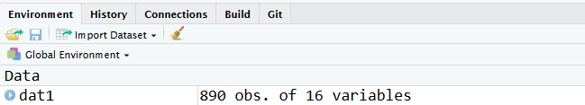
The Rstudio IDE has a ton of really useful features that makes programming in R easier. Using the View() function within Rstudio will cause a new tab to open in the source panel with a view of your data. Hovering over the name of a column will cause the type of column to display. Any label attributes will be displayed in the view, and all columns in the view can be sorted.
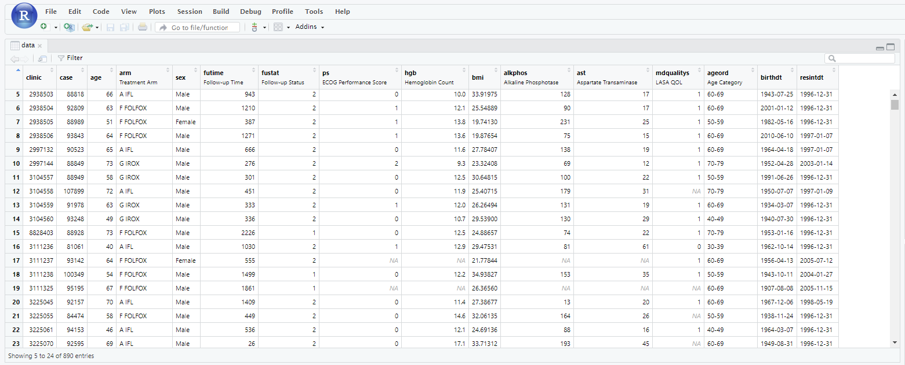
Here is some simple code that prints out the variable names and their classes using the functions sapply() and class(). sapply is a function that looks at each element within a list (here, each variable) and runs the specified function (here, class()). Results are returned as a vector. Then, the knitr package includes the kable function which makes pretty default tables, especially for reports.
In the output below, the class() function is returning the class of each variable. Typical R classes for variables in a dataset include: character, numeric, integer, Date, logical, factor. More information on classes and data types can be found in Hadley Wickham’s book Advanced R.
| Type | |
|---|---|
| id | numeric |
| age | numeric |
| arm | character |
| sex | character |
| futime | numeric |
| fustat | numeric |
| ps | numeric |
| hgb | numeric |
| bmi | numeric |
| alkphos | numeric |
| ast | numeric |
| mdqualitys | numeric |
| ageord | character |
| birthdt | Date |
| resintdt | Date |
Other options to this exercise can be found at the end of this document.
1.2.2 Data Exploring
- Take a closer look at the data using basic summary statistics. Do you notice any strange values? If so, fix them.
There are a number of different tools that are available to explore a new dataset. The package summarytools includes the function dfSummary() which provides basic summaries of all of the variables in a dataset. When the summary is written directly to a file, it also provides nice graphical summaries of each variable.
> library(summarytools)
Registered S3 method overwritten by 'pryr':
method from
print.bytes Rcpp
Warning in fun(libname, pkgname): couldn't connect to display ":0"
system might not have X11 capabilities; in case of errors when using dfSummary(), set st_options(use.x11 = FALSE)
Attaching package: 'summarytools'
The following object is masked from 'package:tibble':
view
>
> # Settings to work well in markdown document (try running default settings
> # interactively)
> dfSummary(dat1, plain.ascii = FALSE, style = "grid", graph.col = FALSE, headings = TRUE)1.2.3 Data Frame Summary
1.2.3.1 dat1
Dimensions: 890 x 15
Duplicates: 0
| No | Variable | Label | Stats / Values | Freqs (% of Valid) | Valid | Missing |
|---|---|---|---|---|---|---|
| 1 | id [numeric] |
Mean (sd) : 91495.3 (5017.7) min < med < max: 76170 < 91912.5 < 112263 IQR (CV) : 4245 (0.1) |
889 distinct values | 890 (100%) |
0 (0%) |
|
| 2 | age [numeric] |
Mean (sd) : 60.2 (11.3) min < med < max: 27 < 61 < 88 IQR (CV) : 16 (0.2) |
59 distinct values | 890 (100%) |
0 (0%) |
|
| 3 | arm [character] |
Treatment Arm | 1. A IFL 2. F FOLFOX 3. G IROX |
303 (34.0%) 299 (33.6%) 288 (32.4%) |
890 (100%) |
0 (0%) |
| 4 | sex [character] |
1. 2 2. F 3. Female 4. Male |
2 ( 0.2%) 2 ( 0.2%) 347 (39.0%) 539 (60.6%) |
890 (100%) |
0 (0%) |
|
| 5 | futime [numeric] |
Follow-up Time | Mean (sd) : 635.3 (487.8) min < med < max: 9 < 516.5 < 2472 IQR (CV) : 546.2 (0.8) |
666 distinct values | 890 (100%) |
0 (0%) |
| 6 | fustat [numeric] |
Follow-up Status | Min : 1 Mean : 1.9 Max : 2 |
1 : 68 ( 7.6%) 2 : 822 (92.4%) |
890 (100%) |
0 (0%) |
| 7 | ps [numeric] |
ECOG Performance Score | Mean (sd) : 0.5 (0.6) min < med < max: 0 < 0 < 2 IQR (CV) : 1 (1.1) |
0 : 403 (52.3%) 1 : 324 (42.1%) 2 : 43 ( 5.6%) |
770 (86.52%) |
120 (13.48%) |
| 8 | hgb [numeric] |
Hemoglobin Count | Mean (sd) : 12.4 (1.7) min < med < max: 9 < 12.2 < 18.2 IQR (CV) : 2.5 (0.1) |
84 distinct values | 770 (86.52%) |
120 (13.48%) |
| 9 | bmi [numeric] |
Mean (sd) : 27.1 (5.6) min < med < max: 3.1 < 26.3 < 60.2 IQR (CV) : 6.3 (0.2) |
828 distinct values | 871 (97.87%) |
19 (2.13%) |
|
| 10 | alkphos [numeric] |
Alkaline Phosphotase | Mean (sd) : 173.8 (135.7) min < med < max: 7 < 125 < 1014 IQR (CV) : 126.8 (0.8) |
307 distinct values | 770 (86.52%) |
120 (13.48%) |
| 11 | ast [numeric] |
Aspartate Transaminase | Mean (sd) : 36.5 (27.1) min < med < max: 7 < 27 < 205 IQR (CV) : 22.8 (0.7) |
114 distinct values | 770 (86.52%) |
120 (13.48%) |
| 12 | mdqualitys [numeric] |
LASA QOL | Min : 0 Mean : 0.9 Max : 1 |
0 : 85 (10.7%) 1 : 707 (89.3%) |
792 (88.99%) |
98 (11.01%) |
| 13 | ageord [character] |
Age Category | 1. 20-29 2. 30-39 3. 40-49 4. 50-59 5. 60-69 6. 70-79 7. 80-89 |
12 ( 1.4%) 40 ( 4.5%) 117 (13.2%) 256 (28.8%) 288 (32.4%) 162 (18.2%) 15 ( 1.7%) |
890 (100%) |
0 (0%) |
| 14 | birthdt [Date] |
min : 1850-01-01 med : 1966-09-22 max : 2015-04-06 range : 165y 3m 5d |
638 distinct values | 890 (100%) |
0 (0%) |
|
| 15 | resintdt [Date] |
min : 1996-12-31 med : 1997-01-01 max : 2014-02-19 range : 17y 1m 19d |
50 distinct values | 812 (91.24%) |
78 (8.76%) |
>
> # Save the results to an external file (includes plots!)
> print(dfSummary(dat1), file = "dat1.html")
Warning in png(png_loc <- tempfile(fileext = ".png"), width = 150 *
graph.magnif, : unable to open connection to X11 display ''
Warning in png(png_loc <- tempfile(fileext = ".png"), width = 150 *
graph.magnif, : unable to open connection to X11 display ''
Warning in png(png_loc <- tempfile(fileext = ".png"), width = 150 *
graph.magnif, : unable to open connection to X11 display ''
Warning in png(png_loc <- tempfile(fileext = ".png"), width = 150 *
graph.magnif, : unable to open connection to X11 display ''
Warning in png(png_loc <- tempfile(fileext = ".png"), width = 150 *
graph.magnif, : unable to open connection to X11 display ''
Warning in png(png_loc <- tempfile(fileext = ".png"), width = 150 *
graph.magnif, : unable to open connection to X11 display ''
Warning in png(png_loc <- tempfile(fileext = ".png"), width = 150 *
graph.magnif, : unable to open connection to X11 display ''
Warning in png(png_loc <- tempfile(fileext = ".png"), width = 150 *
graph.magnif, : unable to open connection to X11 display ''
Warning in png(png_loc <- tempfile(fileext = ".png"), width = 150 *
graph.magnif, : unable to open connection to X11 display ''
Warning in png(png_loc <- tempfile(fileext = ".png"), width = 150 *
graph.magnif, : unable to open connection to X11 display ''
Warning in png(png_loc <- tempfile(fileext = ".png"), width = 150 *
graph.magnif, : unable to open connection to X11 display ''
Warning in png(png_loc <- tempfile(fileext = ".png"), width = 150 *
graph.magnif, : unable to open connection to X11 display ''
Warning in png(png_loc <- tempfile(fileext = ".png"), width = 150 *
graph.magnif, : unable to open connection to X11 display ''
Warning in png(png_loc <- tempfile(fileext = ".png"), width = 150 *
graph.magnif, : unable to open connection to X11 display ''
Warning in png(png_loc <- tempfile(fileext = ".png"), width = 150 *
graph.magnif, : unable to open connection to X11 display ''
Switching method to 'browser'
Output file written: /home/atkinson/education/R_project_recipes/dat1.htmlSee the external file version.
Another option is to use the tableby() function that is available in the Mayo package arsenal. Tableby is a fantastic function for quick summaries for data exploration or reporting “table 1” describing the cohort. This function allows you to summarize the data stratified by some “by” variable or overall without any stratification. The code ~ sex + arm + age + bmi is a formula. If you wanted to stratify by a variable you would list the stratification variable on the left hand side of the ~. The tableby function does all the calculations, but it doesn’t create the information in a nice format. The summary() function pulls everything together into a nice table. Note that when you type summary here you are actually using summary.tableby(). This is important when looking for help with summarizing the tableby output.
If you want to look at the summary in your console window, you might want to use summary(tab1, text=T). In order for the table to look nice within an R markdown (knitr) report, you just need to specify
results="asis" when creating the r chunk. This changes the layout slightly (compresses it) and bolds the variable names.
[1] “tableby” “arsenal_table”
| Overall (N=890) | |
|---|---|
| sex | |
| 2 | 2 (0.2%) |
| F | 2 (0.2%) |
| Female | 347 (39.0%) |
| Male | 539 (60.6%) |
| Treatment Arm | |
| A IFL | 303 (34.0%) |
| F FOLFOX | 299 (33.6%) |
| G IROX | 288 (32.4%) |
| age | |
| Mean (SD) | 60.152 (11.342) |
| Range | 27.000 - 88.000 |
| bmi | |
| N-Miss | 19 |
| Mean (SD) | 27.106 (5.620) |
| Range | 3.060 - 60.243 |
If you want to examine every variable in dat you can use the shortcut ..
Based on these summaries, it appears that sex was not coded correctly and needs to be fixed. Our investigator confirms that 2 is supposed to be female. To correct this, we will pull out all the values in the variable sex within the dat1 dataset that are equal to 2 or F (dat1$sex[dat1$sex %in% c('2','F')]) and assign those values to be equal to “Female” (<- 'Female').
> table(dat1$sex)
2 F Female Male
2 2 347 539
>
> # For those observations that are 2 or F, change them to Female
> dat1$sex[dat1$sex %in% c("2", "F")] <- "Female"
>
> table(dat1$sex)
Female Male
351 539 One of the tricky functions in R for SAS programmers is the ifelse() function which differs from if() {} else {}. Suppose that you believe that all observations over a certain cutoff are errors and you want to set them equal to missing. The code below uses ifelse. The first argument creates a logical True/False variable. For those observations where the “test” is TRUE, use the value in the “yes” field and for those observations where the “test” is FALSE, use the value in the “no” field.
> ast <- dat1$ast
> summary(ast)
Min. 1st Qu. Median Mean 3rd Qu. Max. NA's
7.00 20.00 27.00 36.46 42.75 205.00 120
> ast2 <- ifelse(test = ast > 45, yes = NA, no = ast)
> summary(ast2)
Min. 1st Qu. Median Mean 3rd Qu. Max. NA's
7.00 19.00 24.00 25.21 31.00 45.00 286 If instead I was creating a loop and I had one logical value, then I would do something like the following using if() else().
> group <- "A IFL"
>
> if (group == "A IFL") {
+ summary(ast)
+ } else {
+ summary(ast2)
+ }
Min. 1st Qu. Median Mean 3rd Qu. Max. NA's
7.00 20.00 27.00 36.46 42.75 205.00 120 An alternative to ifelse is the case_when() function in the dplyr package. It is particularly useful when you have multiple nested “ifelse” statements. For instance, this is another alternative for fixing the code for sex.
- Oops, there is a duplicate observation in the data. Confirm the data is the same for all the variables and remove one of the duplicates.
Mistakes in data entry occur all the time. It is wise to check for duplicate records and/or more than one record per unique patient. There are a few different tools that can be used to check for duplicate observations including the functions duplicated() and dplyr::distinct().
> # count how many times each id appears in dat1
> table(table(dat1$id))
1 2
888 1
>
>
> # This next line of code first identifies which ids are duplicated:
> # 'duplicated(dat1$id)' Then, it selects those ids from 'dat1$id' and returns
> # only one instance of each duplicated ids using 'unique()'.
>
> tmp <- unique(dat1$id[duplicated(dat1$id)])
>
> # which rows have a duplicate?
> dup.rows <- which(dat1$id %in% tmp)
>
> # show a portion of the data with the duplicates - which version do you keep?
> # the kable function is available in the knitr package
> kable(dat1[dup.rows, c("id", "age", "arm", "sex", "bmi")])| id | age | arm | sex | bmi |
|---|---|---|---|---|
| 101106 | 79 | F FOLFOX | Female | 3.059935 |
| 101106 | 79 | F FOLFOX | Female | 30.599346 |
This same code can be run using the following dplyr commands. It also illustrates the use of “piping”, which is what the 3 character string %>% is called. Basically, it allows you to combine a bunch of commands together without having to save out temporary datasets. The filter command keeps only those observations where the condition is true. The select function keeps only certain variables.
> # Using dplyr code this would be
> dat1 %>% filter(id %in% tmp) %>% select(id, age, arm, sex, bmi) %>% kable()| id | age | arm | sex | bmi |
|---|---|---|---|---|
| 101106 | 79 | F FOLFOX | Female | 3.059935 |
| 101106 | 79 | F FOLFOX | Female | 30.599346 |
Now check to see if the observations are a complete duplicate or not.
> # When you use `duplicated()` on a data.frame, it will test for completely
> # identical rows.
> table(duplicated(dat1))
FALSE
890
>
> # remove rows with duplicate values (2 different approaches) Both approaches will
> # return the first instance of a row and will exclude any duplicated rows. This
> # is similar to `FIRST.` in SAS.
> dim(dat1)
[1] 890 15
>
> dat2 <- dat1[!duplicated(dat1), ]
> dim(dat2)
[1] 890 15- Summarize age, gender, bmi, … by the treatment variable using parametric statistics
Again, this is an instance where tableby produces a nice table. Here the variable arm is listed on the left-hand side of the formula. The option pfootnote=TRUE indicates that the summary table should show a footnote indicating what test was run.
> tab1 <- tableby(arm ~ age + sex + ps + bmi + alkphos + mdqualitys + ageord + birthdt,
+ data = dat2)
> summary(tab1, pfootnote = TRUE, total = FALSE)| A IFL (N=303) | F FOLFOX (N=299) | G IROX (N=288) | p value | |
|---|---|---|---|---|
| age | 0.5851 | |||
| Mean (SD) | 59.696 (11.365) | 60.652 (11.422) | 60.111 (11.253) | |
| Range | 27.000 - 88.000 | 27.000 - 88.000 | 28.000 - 84.000 | |
| sex | 0.1752 | |||
| Female | 107 (35.3%) | 127 (42.5%) | 117 (40.6%) | |
| Male | 196 (64.7%) | 172 (57.5%) | 171 (59.4%) | |
| ECOG Performance Score | 0.7811 | |||
| N-Miss | 45 | 39 | 36 | |
| Mean (SD) | 0.512 (0.600) | 0.538 (0.598) | 0.548 (0.607) | |
| Range | 0.000 - 2.000 | 0.000 - 2.000 | 0.000 - 2.000 | |
| bmi | 0.7451 | |||
| N-Miss | 6 | 9 | 4 | |
| Mean (SD) | 27.278 (5.493) | 27.112 (5.499) | 26.920 (5.883) | |
| Range | 14.053 - 53.008 | 3.060 - 49.130 | 16.071 - 60.243 | |
| Alkaline Phosphotase | 0.7071 | |||
| N-Miss | 45 | 39 | 36 | |
| Mean (SD) | 170.612 (124.842) | 171.377 (133.671) | 179.663 (148.110) | |
| Range | 13.000 - 858.000 | 18.000 - 1014.000 | 7.000 - 982.000 | |
| LASA QOL | 0.9371 | |||
| N-Miss | 31 | 35 | 32 | |
| Mean (SD) | 0.890 (0.314) | 0.890 (0.313) | 0.898 (0.303) | |
| Range | 0.000 - 1.000 | 0.000 - 1.000 | 0.000 - 1.000 | |
| Age Category | 0.9942 | |||
| 20-29 | 3 (1.0%) | 4 (1.3%) | 5 (1.7%) | |
| 30-39 | 15 (5.0%) | 12 (4.0%) | 13 (4.5%) | |
| 40-49 | 46 (15.2%) | 36 (12.0%) | 35 (12.2%) | |
| 50-59 | 85 (28.1%) | 89 (29.8%) | 82 (28.5%) | |
| 60-69 | 98 (32.3%) | 96 (32.1%) | 94 (32.6%) | |
| 70-79 | 52 (17.2%) | 56 (18.7%) | 54 (18.8%) | |
| 80-89 | 4 (1.3%) | 6 (2.0%) | 5 (1.7%) | |
| birthdt | 0.6533 | |||
| Median | 1966-10-09 | 1969-01-01 | 1964-10-02 | |
| Range | 1850-01-01 - 2015-04-06 | 1850-01-01 - 2013-11-03 | 1850-01-01 - 2014-01-01 |
- Linear Model ANOVA
- Pearson’s Chi-squared test
- Kruskal-Wallis rank sum test
- Do the summary statistics make sense for each variable? If not, modify them so that the default summaries fit the data.
These are the variables that are not creating the correct summaries
- LASA QOL (
mdqualitys)- Range of values from 0-1
- ECOG Performance Score (
ps)- Range of values from 0 - 2
- 0 = Asymptomatic, 1 = Symptomatic but ambulatory, 2 = Symptomatic, <50% in bed during the day
- Age group (
ageord)- Age groups, character strings (20-29, … 80-89)
The variables mdqualitys and ps should not be treated as numeric values and summaries for ageord should recognize that 20-29 is less than 30-39 (hence the use of the “ordered” function instead of “factor”).
> # Since the summaries performed by `tableby` are dependent on the class of the
> # variable, if we change the class, we change the how `tableby` treats the
> # variable.
>
> # change mdqualitys to a factor
> dat2$mdqualitys <- factor(dat2$mdqualitys, levels = c(0, 1), labels = c("Deficient",
+ "Not Deficient"))
>
> # change ps to an ordered factor where 0 < 1 < 2
> dat2$ps <- ordered(dat2$ps, levels = 0:2, labels = 0:2)
>
> # change ageord to an ordered factor
> dat2$ageord <- ordered(dat2$ageord)- Change the label for the variables
ageandbmi
When reading data in from SAS, variable labels are retained and stored in the attribute of the variable. Usually in R, when a data.frame is subsetted these labels disappear. Therefore it is useful to keep a separate object storing the variables and their labels. If you have attached the package arsenal we have modified this behavior so labels do not disappear.
You can assign columns metadata, like a label, that describes them using attributes. If you want to modify/add a specific label, there are a couple of ways to do that. The function tableby will look for label attributes and will automatically use them in the summaries. Another way to modify/add is using the attr() function.
NULL
> labels(dat2)$bmi <- "Body Mass Index"
>
> # Modify the actual attribute for the variable
> attr(dat2$age, "label")NULL
More information about labels can be found in the arsenal vignette on that topic.
- Now change the summary statistics to be non-parametric in the table.
Using the function tableby.control() you can define which summary statistics and tests you want to appear for each type of variable (look at the help page of tableby.control, try ?tableby.control for more details).
> # change summary statistics to be non-parametric by using numeric.stats in
> # tableby.control also, revise the number of decimal places, remove chi-squared
> # correction create a tableby.control object to use later
> mycontrol <- tableby.control(numeric.stats = c("Nmiss", "medianq1q3"), digits = 1,
+ chisq.correct = FALSE)
>
> tab2 <- tableby(arm ~ age + sex + ps + bmi + alkphos + mdqualitys + ageord + birthdt,
+ data = dat2, control = mycontrol)
> summary(tab2, pfootnote = TRUE)| A IFL (N=303) | F FOLFOX (N=299) | G IROX (N=288) | Total (N=890) | p value | |
|---|---|---|---|---|---|
| Age at baseline | 0.5851 | ||||
| Median (Q1, Q3) | 61.0 (53.0, 68.0) | 61.0 (52.5, 69.0) | 61.0 (53.0, 68.2) | 61.0 (53.0, 69.0) | |
| sex | 0.1752 | ||||
| Female | 107 (35.3%) | 127 (42.5%) | 117 (40.6%) | 351 (39.4%) | |
| Male | 196 (64.7%) | 172 (57.5%) | 171 (59.4%) | 539 (60.6%) | |
| ps | 0.7803 | ||||
| N-Miss | 45 | 39 | 36 | 120 | |
| 0 | 140 (54.3%) | 134 (51.5%) | 129 (51.2%) | 403 (52.3%) | |
| 1 | 104 (40.3%) | 112 (43.1%) | 108 (42.9%) | 324 (42.1%) | |
| 2 | 14 (5.4%) | 14 (5.4%) | 15 (6.0%) | 43 (5.6%) | |
| Body Mass Index | 0.7451 | ||||
| N-Miss | 6 | 9 | 4 | 19 | |
| Median (Q1, Q3) | 26.3 (23.6, 30.1) | 26.5 (23.7, 29.7) | 25.8 (23.0, 29.2) | 26.3 (23.5, 29.8) | |
| Alkaline Phosphotase | 0.7071 | ||||
| N-Miss | 45 | 39 | 36 | 120 | |
| Median (Q1, Q3) | 128.0 (83.2, 212.8) | 122.0 (87.8, 207.5) | 122.0 (87.8, 219.8) | 125.0 (86.0, 212.8) | |
| mdqualitys | 0.9362 | ||||
| N-Miss | 31 | 35 | 32 | 98 | |
| Deficient | 30 (11.0%) | 29 (11.0%) | 26 (10.2%) | 85 (10.7%) | |
| Not Deficient | 242 (89.0%) | 235 (89.0%) | 230 (89.8%) | 707 (89.3%) | |
| ageord | 0.6373 | ||||
| 20-29 | 3 (1.0%) | 4 (1.3%) | 5 (1.7%) | 12 (1.3%) | |
| 30-39 | 15 (5.0%) | 12 (4.0%) | 13 (4.5%) | 40 (4.5%) | |
| 40-49 | 46 (15.2%) | 36 (12.0%) | 35 (12.2%) | 117 (13.1%) | |
| 50-59 | 85 (28.1%) | 89 (29.8%) | 82 (28.5%) | 256 (28.8%) | |
| 60-69 | 98 (32.3%) | 96 (32.1%) | 94 (32.6%) | 288 (32.4%) | |
| 70-79 | 52 (17.2%) | 56 (18.7%) | 54 (18.8%) | 162 (18.2%) | |
| 80-89 | 4 (1.3%) | 6 (2.0%) | 5 (1.7%) | 15 (1.7%) | |
| birthdt | 0.6534 | ||||
| Median | 1966-10-09 | 1969-01-01 | 1964-10-02 | 1966-09-22 | |
| Range | 1850-01-01 - 2015-04-06 | 1850-01-01 - 2013-11-03 | 1850-01-01 - 2014-01-01 | 1850-01-01 - 2015-04-06 |
- Linear Model ANOVA
- Pearson’s Chi-squared test
- Trend test for ordinal variables
- Kruskal-Wallis rank sum test
We can see that Age Group, ECOG Performance Score, and LASA QOL are now summarized appropriately and the default tests have changed for these variables. Also, the labels for BMI and age have changed.
Another way to add labels is to use the labelTranslations option within summary.tableby(). Here this example assumes that you have a list describing the variable labels (see the example at the end of the document for details on how to create the vlabels list).
> # Use labelTranslations to add labels, ignore warning
> summary(tab2, labelTranslations = vlabels, pfootnote)- Run the table separately for males only (subsetting on the fly instead of creating separate datasets). In your report, add some text describing how many males and how many females you have.
> tab2_males <- tableby(arm ~ age + ps + bmi + alkphos + mdqualitys + ageord + birthdt,
+ data = dat2, control = mycontrol, subset = sex == "Male")
> summary(tab2_males, pfootnote = TRUE, title = "Males only")| A IFL (N=196) | F FOLFOX (N=172) | G IROX (N=171) | Total (N=539) | p value | |
|---|---|---|---|---|---|
| Age at baseline | 0.7171 | ||||
| Median (Q1, Q3) | 61.0 (53.8, 68.0) | 61.0 (53.0, 69.0) | 62.0 (53.5, 69.5) | 61.0 (53.0, 69.0) | |
| ps | 0.5082 | ||||
| N-Miss | 32 | 16 | 24 | 72 | |
| 0 | 94 (57.3%) | 80 (51.3%) | 79 (53.7%) | 253 (54.2%) | |
| 1 | 64 (39.0%) | 68 (43.6%) | 61 (41.5%) | 193 (41.3%) | |
| 2 | 6 (3.7%) | 8 (5.1%) | 7 (4.8%) | 21 (4.5%) | |
| Body Mass Index | 0.8721 | ||||
| N-Miss | 4 | 5 | 3 | 12 | |
| Median (Q1, Q3) | 26.8 (24.3, 30.0) | 26.7 (24.1, 30.0) | 26.3 (24.0, 29.2) | 26.5 (24.1, 29.9) | |
| Alkaline Phosphotase | 0.7631 | ||||
| N-Miss | 32 | 16 | 24 | 72 | |
| Median (Q1, Q3) | 125.0 (82.0, 205.2) | 123.5 (89.0, 195.2) | 111.0 (87.0, 196.5) | 122.0 (86.0, 199.5) | |
| mdqualitys | 0.8613 | ||||
| N-Miss | 17 | 19 | 19 | 55 | |
| Deficient | 21 (11.7%) | 17 (11.1%) | 15 (9.9%) | 53 (11.0%) | |
| Not Deficient | 158 (88.3%) | 136 (88.9%) | 137 (90.1%) | 431 (89.0%) | |
| ageord | 0.6022 | ||||
| 20-29 | 2 (1.0%) | 2 (1.2%) | 1 (0.6%) | 5 (0.9%) | |
| 30-39 | 8 (4.1%) | 7 (4.1%) | 8 (4.7%) | 23 (4.3%) | |
| 40-49 | 29 (14.8%) | 25 (14.5%) | 20 (11.7%) | 74 (13.7%) | |
| 50-59 | 58 (29.6%) | 48 (27.9%) | 49 (28.7%) | 155 (28.8%) | |
| 60-69 | 63 (32.1%) | 56 (32.6%) | 54 (31.6%) | 173 (32.1%) | |
| 70-79 | 33 (16.8%) | 29 (16.9%) | 35 (20.5%) | 97 (18.0%) | |
| 80-89 | 3 (1.5%) | 5 (2.9%) | 4 (2.3%) | 12 (2.2%) | |
| birthdt | 0.0424 | ||||
| Median | 1969-01-01 | 1972-02-07 | 1965-01-01 | 1969-01-01 | |
| Range | 1850-01-01 - 2015-04-06 | 1850-01-01 - 2013-11-03 | 1850-01-01 - 2014-01-01 | 1850-01-01 - 2015-04-06 |
- Linear Model ANOVA
- Trend test for ordinal variables
- Pearson’s Chi-squared test
- Kruskal-Wallis rank sum test
>
> # either calculate these ahead of time or on-the-fly
> nfemale <- sum(dat2$sex == "Female")
> nmales <- sum(dat2$sex == "Male")The study sample consists of 890 observations, of which 539 are men and 351 are women.
- How many people have the combinations of ps, sex, and treatment arm?
The freqlist() function, also available in the arsenal package, provides summaries similar to what you might get with proc freq; table a*b*c / list in SAS. The sparse option shows all combinations.
| ps | sex | Treatment Arm | Freq | Cumulative Freq | Percent | Cumulative Percent |
|---|---|---|---|---|---|---|
| 0 | Female | A IFL | 46 | 46 | 5.17 | 5.17 |
| F FOLFOX | 54 | 100 | 6.07 | 11.24 | ||
| G IROX | 50 | 150 | 5.62 | 16.85 | ||
| Male | A IFL | 94 | 244 | 10.56 | 27.42 | |
| F FOLFOX | 80 | 324 | 8.99 | 36.40 | ||
| G IROX | 79 | 403 | 8.88 | 45.28 | ||
| 1 | Female | A IFL | 40 | 443 | 4.49 | 49.78 |
| F FOLFOX | 44 | 487 | 4.94 | 54.72 | ||
| G IROX | 47 | 534 | 5.28 | 60.00 | ||
| Male | A IFL | 64 | 598 | 7.19 | 67.19 | |
| F FOLFOX | 68 | 666 | 7.64 | 74.83 | ||
| G IROX | 61 | 727 | 6.85 | 81.69 | ||
| 2 | Female | A IFL | 8 | 735 | 0.90 | 82.58 |
| F FOLFOX | 6 | 741 | 0.67 | 83.26 | ||
| G IROX | 8 | 749 | 0.90 | 84.16 | ||
| Male | A IFL | 6 | 755 | 0.67 | 84.83 | |
| F FOLFOX | 8 | 763 | 0.90 | 85.73 | ||
| G IROX | 7 | 770 | 0.79 | 86.52 | ||
| NA | Female | A IFL | 13 | 783 | 1.46 | 87.98 |
| F FOLFOX | 23 | 806 | 2.58 | 90.56 | ||
| G IROX | 12 | 818 | 1.35 | 91.91 | ||
| Male | A IFL | 32 | 850 | 3.60 | 95.51 | |
| F FOLFOX | 16 | 866 | 1.80 | 97.30 | ||
| G IROX | 24 | 890 | 2.70 | 100.00 |
Many times we are interested in the frequency of certain combinations of variables. The code below illustrates the power of the group_by() and count() available in the dplyr package. This is a handy way to do several commands together. In this example, the code reads as:
- use the dataset
dat2 - stratify the data by a combination of sex, arm, and ps
- count how many rows there are in each strata
- print out the results using the
kable()function
| sex | arm | ps | n |
|---|---|---|---|
| Female | A IFL | 0 | 46 |
| Female | A IFL | 1 | 40 |
| Female | A IFL | 2 | 8 |
| Female | A IFL | NA | 13 |
| Female | F FOLFOX | 0 | 54 |
| Female | F FOLFOX | 1 | 44 |
| Female | F FOLFOX | 2 | 6 |
| Female | F FOLFOX | NA | 23 |
| Female | G IROX | 0 | 50 |
| Female | G IROX | 1 | 47 |
| Female | G IROX | 2 | 8 |
| Female | G IROX | NA | 12 |
| Male | A IFL | 0 | 94 |
| Male | A IFL | 1 | 64 |
| Male | A IFL | 2 | 6 |
| Male | A IFL | NA | 32 |
| Male | F FOLFOX | 0 | 80 |
| Male | F FOLFOX | 1 | 68 |
| Male | F FOLFOX | 2 | 8 |
| Male | F FOLFOX | NA | 16 |
| Male | G IROX | 0 | 79 |
| Male | G IROX | 1 | 61 |
| Male | G IROX | 2 | 7 |
| Male | G IROX | NA | 24 |
- Fancier: create a formula from a list of variables that can used in tableby (hint: explore
formulize)
The arsenal package has the function formulize() which allows you to create a formula and use it repeatedly. This can be especially helpful when you have a list of variables that you want to loop over or summarize in different ways.
sex ~ hgb + alkphos + ast
| Female (N=351) | Male (N=539) | Total (N=890) | p value | |
|---|---|---|---|---|
| Hemoglobin Count | < 0.001 | |||
| N-Miss | 48 | 72 | 120 | |
| Mean (SD) | 11.956 (1.446) | 12.620 (1.796) | 12.359 (1.698) | |
| Range | 9.000 - 17.900 | 9.000 - 18.200 | 9.000 - 18.200 | |
| Alkaline Phosphotase | 0.342 | |||
| N-Miss | 48 | 72 | 120 | |
| Mean (SD) | 179.607 (131.827) | 170.086 (138.099) | 173.832 (135.659) | |
| Range | 7.000 - 771.000 | 13.000 - 1014.000 | 7.000 - 1014.000 | |
| Aspartate Transaminase | 0.406 | |||
| N-Miss | 48 | 72 | 120 | |
| Mean (SD) | 37.475 (28.437) | 35.809 (26.288) | 36.465 (27.148) | |
| Range | 10.000 - 178.000 | 7.000 - 205.000 | 7.000 - 205.000 |
Other options to this exercise can be found at the end of this document.
1.2.4 Plotting
There are three main plotting systems in R: basic, ggplot2, and lattice.
It is useful to know at least the basic and ggplot2 approaches to plotting because sometimes one tool is better than the other.
The examples below include both basic and ggplot2 code so that you can compare the results.
There are two basic and fundamental parts of a ggplot call:
the aes() function, which defines the plots aesthetics, and a call to a geom_*() function.
Basically the aes() function defines the variables to be used on the x and y axes (and optionally a group variable).
The geom_*() functions will define what type of plot to use (boxplot, scatterplot, etc.).
1.2.4.1 Boxplots
- Create a boxplot of bmi
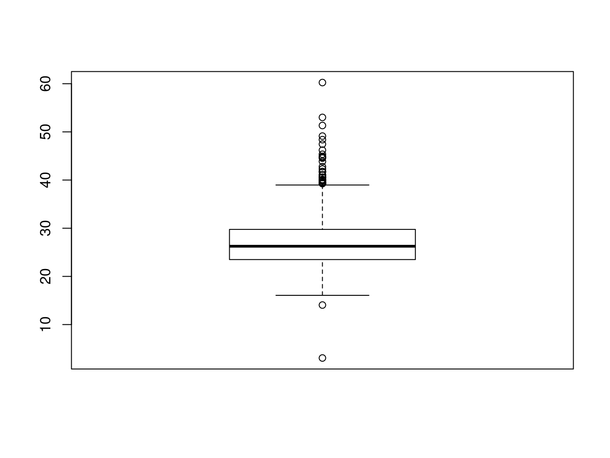
>
> # code using ggplot
> library(ggplot2)
> ggplot(dat2, aes(x = "total", y = bmi)) + geom_boxplot()
Warning: Removed 19 rows containing non-finite values (stat_boxplot).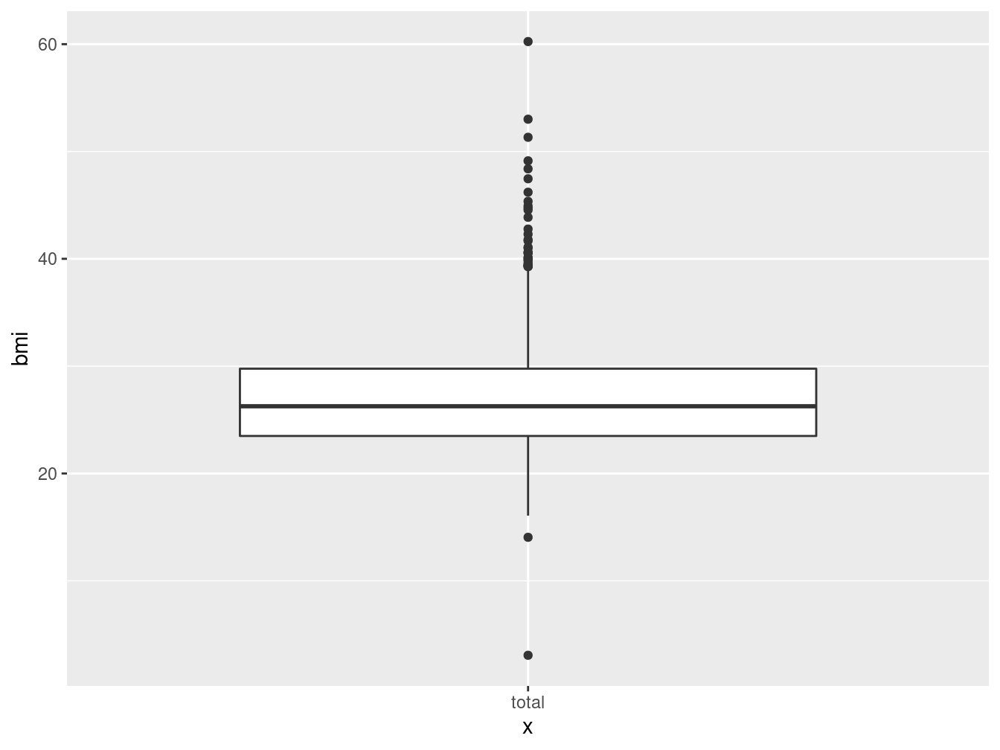
- Now create the boxplots stratified by the treatment arm
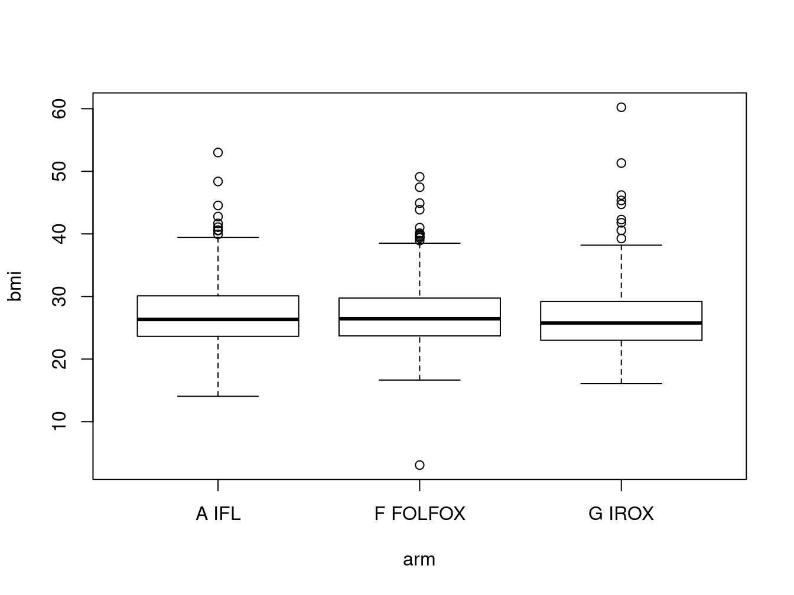
>
> # code using ggplot
> ggplot(dat2, aes(x = arm, y = bmi)) + geom_boxplot()
Warning: Removed 19 rows containing non-finite values (stat_boxplot).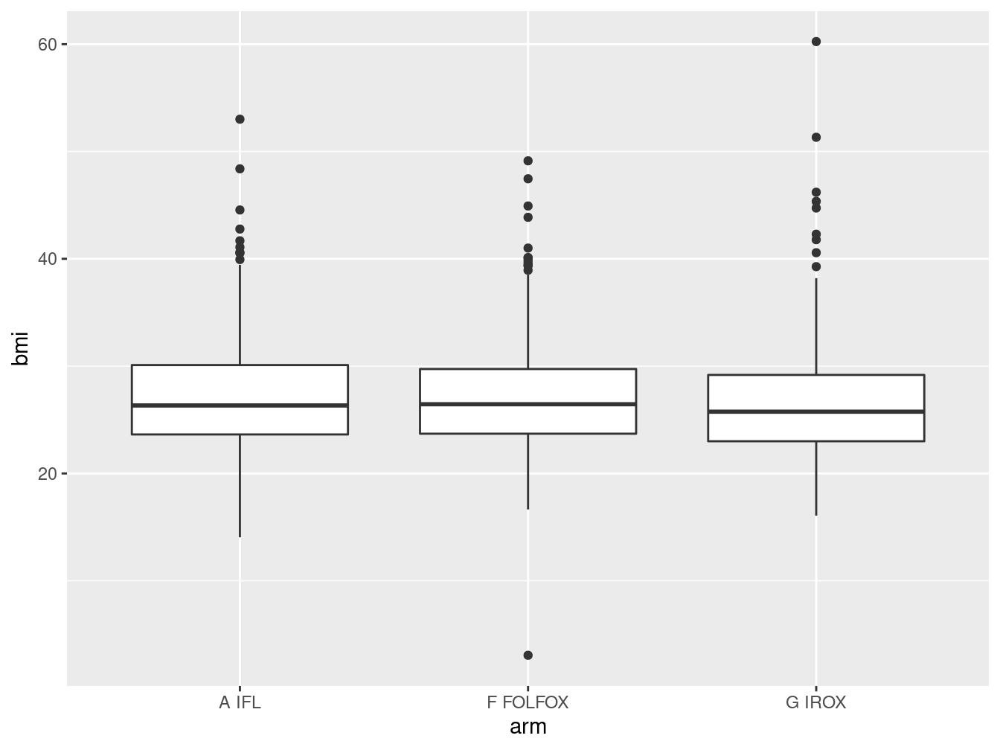
- Modify the axis labels and add a title to your plot.
> # code using basic R
> boxplot(bmi ~ arm, data = dat2, xlab = " ", ylab = "BMI at baseline", main = "BMI distribution stratified by treatment group")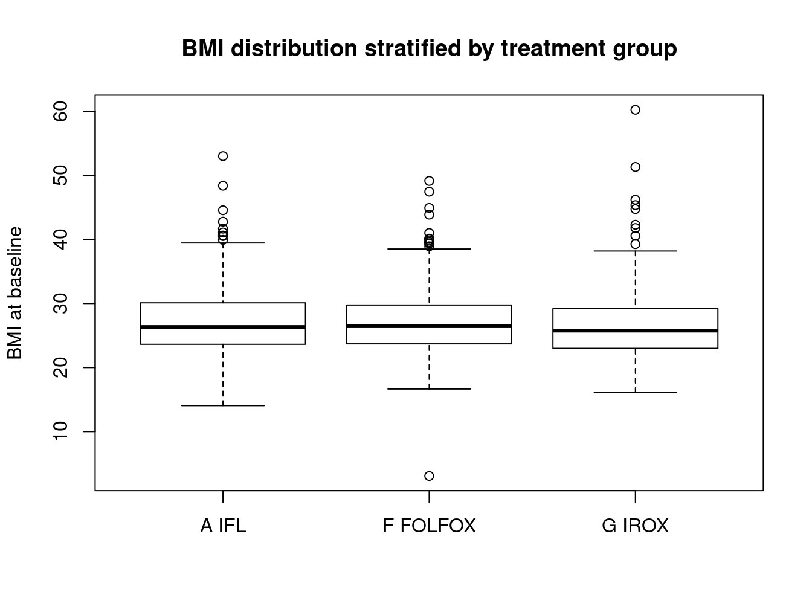
>
> # code using ggplot
> ggplot(dat2, aes(x = arm, y = bmi)) + geom_boxplot() + xlab(" ") + ylab("BMI at baseline") +
+ ggtitle("BMI distribution stratified by treatment group")
Warning: Removed 19 rows containing non-finite values (stat_boxplot).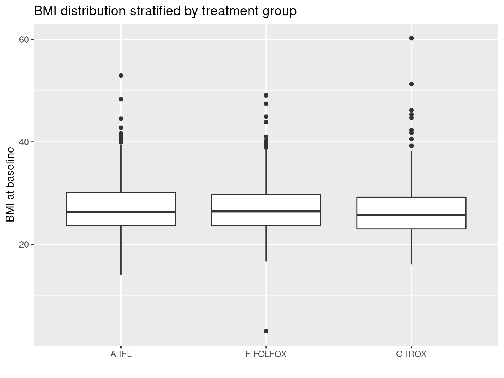
1.2.4.2 Scatterplots
- Now make two scatterplots of age versus bmi with different colors indicating treatment
The call to as.numeric(as.factor(arm)) turns the levels of arm to a factor which is essentially a numeric variables with formats. The call to as.numeric then changes the factor to a number, and the numbers correspond to different colors (1=black, 2=red, 3=green, 4=blue, 5=lightblue, 6=pink, 7=yellow, 8=gray).
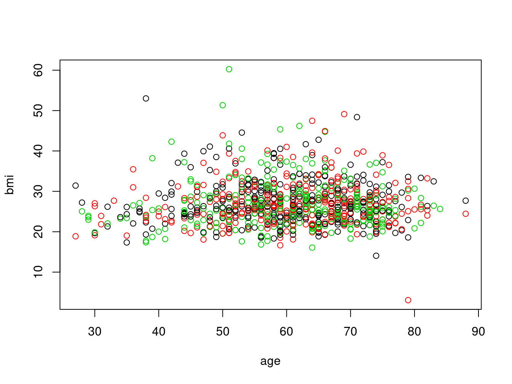
>
> # code using ggplot
> ggplot(dat2, aes(age, bmi, color = arm)) + geom_point()
Warning: Removed 19 rows containing missing values (geom_point).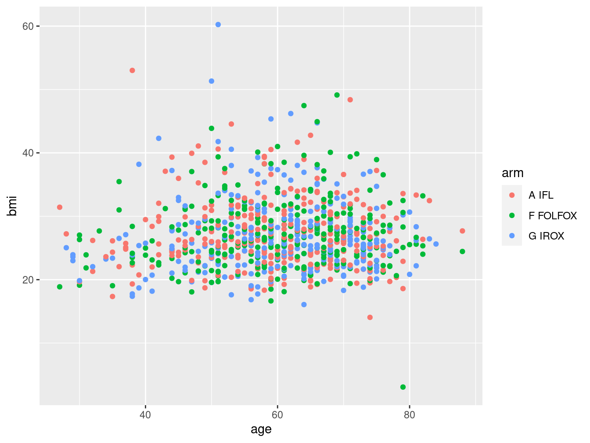
- Create these same scatterplots, side-by-side, separately for males and females
> # code using basic R
> par(mfrow = c(1, 2))
> plot(bmi ~ age, data = dat2[dat2$sex == "Female", ], col = as.numeric(as.factor(arm)),
+ main = "Females")
> plot(bmi ~ age, data = dat2[dat2$sex == "Male", ], col = as.numeric(as.factor(arm)),
+ main = "Males")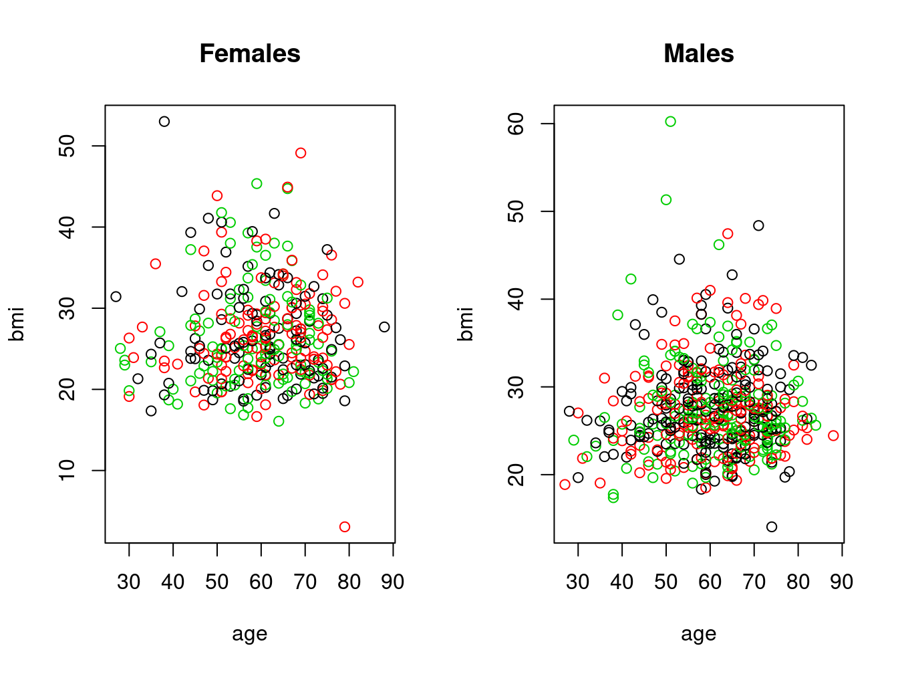
> par(mfrow = c(1, 1))
>
> # code using ggplot
> ggplot(dat2, aes(age, bmi, color = arm)) + geom_point() + facet_grid(~sex)
Warning: Removed 19 rows containing missing values (geom_point).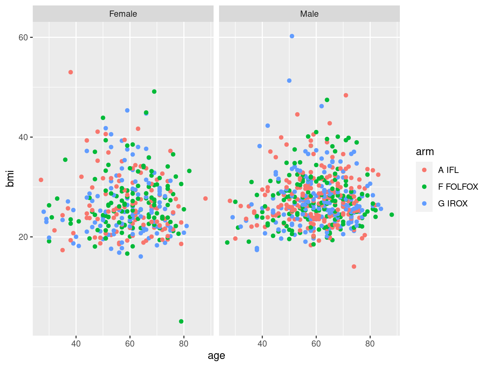
- Fancier: How would you add a regression line to these plots? How about smoothers?
The code using base R graphics can be found further down at the end of this document.
> # code using ggplot -- Regression lines
> ggplot(dat2, aes(age, bmi, color = arm)) + geom_point() + facet_grid(~sex) + geom_smooth(method = "lm")
`geom_smooth()` using formula 'y ~ x'
Warning: Removed 19 rows containing non-finite values (stat_smooth).
Warning: Removed 19 rows containing missing values (geom_point).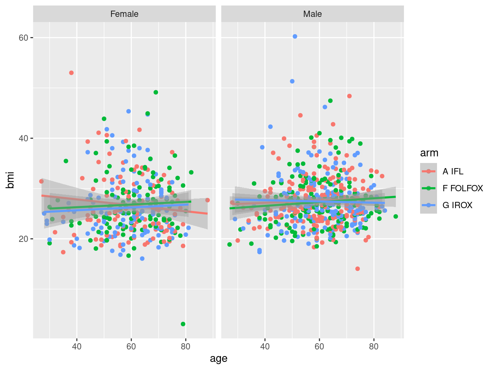
>
> # -- Smoothers
> ggplot(dat2, aes(age, bmi, color = arm)) + geom_point() + facet_grid(~sex) + geom_smooth()
`geom_smooth()` using method = 'loess' and formula 'y ~ x'
Warning: Removed 19 rows containing non-finite values (stat_smooth).
Warning: Removed 19 rows containing missing values (geom_point).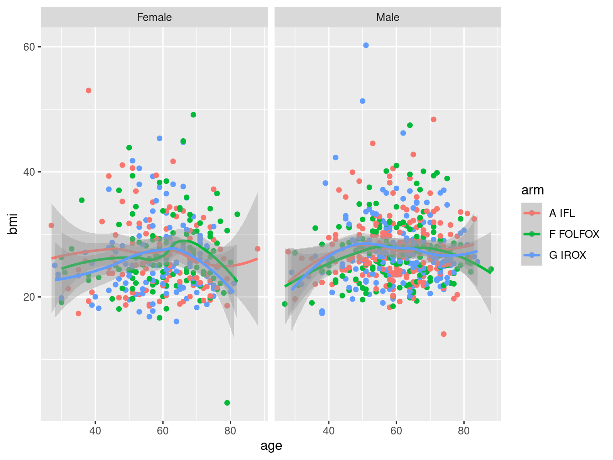
>
> # -- Smoothers removing the confidence bands
> ggplot(dat2, aes(age, bmi, color = arm)) + geom_point() + facet_grid(~sex) + geom_smooth(se = FALSE)
`geom_smooth()` using method = 'loess' and formula 'y ~ x'
Warning: Removed 19 rows containing non-finite values (stat_smooth).
Warning: Removed 19 rows containing missing values (geom_point).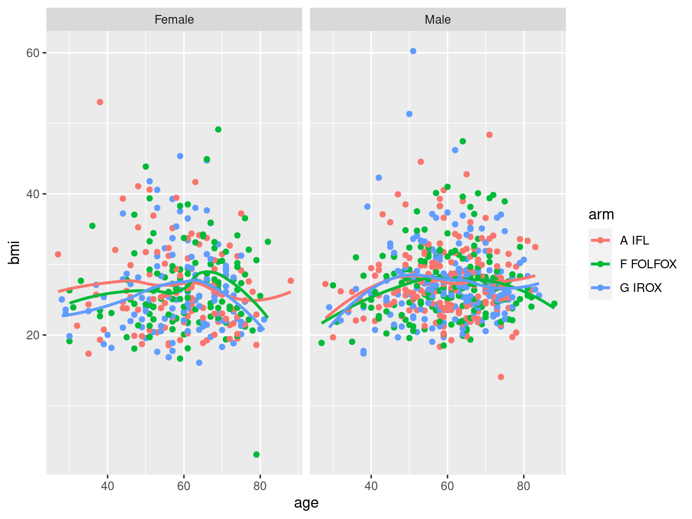
There are many formating options for ggplot including theme_bw and the package [ggthemes[(https://rdrr.io/cran/ggthemes/)] which includes extra themes, geoms, and scales for ggplot2. Below, see how the plot has changed by just indicating the plotting theme. Another addition is the alpha term which lightens the points (default=1).
> ggplot(dat2, aes(age, bmi, color = arm)) + geom_point(alpha = 0.2) + facet_grid(~sex) +
+ geom_smooth(se = FALSE) + theme_bw()
`geom_smooth()` using method = 'loess' and formula 'y ~ x'
Warning: Removed 19 rows containing non-finite values (stat_smooth).
Warning: Removed 19 rows containing missing values (geom_point).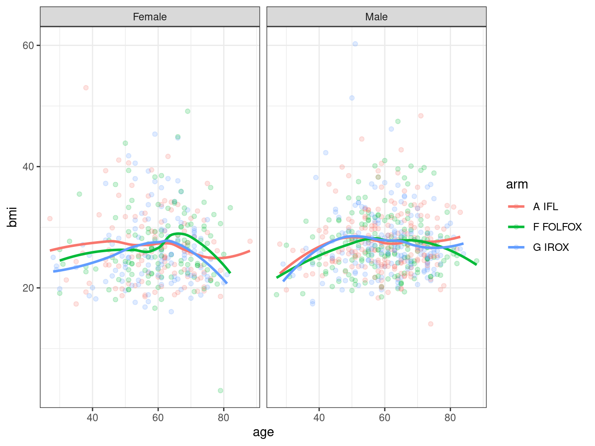
1.2.5 Basic Modeling
- Run a simple linear regression model predicting bmi with a covariate that is coded as 1/2. Now re-do it with the covariate coded as a factor. Did the answer change?
First create a numeric version of sex with the values 1 and 2 (for illustration purposes only). This can be done by changing the variable sex from character to a factor, then changing the factor to numeric.
> # Create a version of sex that is coded 1/2
> dat2$sex.f <- factor(dat2$sex)
> dat2$sex12 <- as.numeric(dat2$sex.f)
>
> table(dat2$sex12, dat2$sex.f)
Female Male
1 351 0
2 0 539Next, fit a linear regression model using the function lm(). The lm() function uses two main arguments - a formula and a dataset.
> # Fit a linear regression model using the the two different versions of sex
> fit1 <- lm(bmi ~ sex12, data = dat2)
> fit2 <- lm(bmi ~ sex.f, data = dat2)There are a number of extractor functions for models, meaning that they can be used to extract information from a model. One example is coef() which extracts the coefficients.
> # Compare the coefficients
> coef(fit1)
(Intercept) sex12
25.6960705 0.8783982
> coef(fit2)
(Intercept) sex.fMale
26.5744687 0.8783982 The summary() function shown below is actually using summary.lm().
> # Look at a standard model summary
> summary(fit1)
Call:
lm(formula = bmi ~ sex12, data = dat2)
Residuals:
Min 1Q Median 3Q Max
-23.515 -3.610 -1.038 2.769 32.790
Coefficients:
Estimate Std. Error t value Pr(>|t|)
(Intercept) 25.6961 0.6521 39.40 <2e-16 ***
sex12 0.8784 0.3887 2.26 0.0241 *
---
Signif. codes: 0 '***' 0.001 '**' 0.01 '*' 0.05 '.' 0.1 ' ' 1
Residual standard error: 5.607 on 869 degrees of freedom
(19 observations deleted due to missingness)
Multiple R-squared: 0.005844, Adjusted R-squared: 0.0047
F-statistic: 5.108 on 1 and 869 DF, p-value: 0.02406Other options to this exercise can be found at the end of this document.
1.2.6 Data Import, revisited
- Now read the data in from Excel. What is different about the datasets?
Using the readxl package we are able to read in Excel data using the read_xls() function.
> # Clean copy of SAS data
> library(haven)
> sas_dat1 <- read_sas("data/dat1.sas7bdat")
>
> # Use the readxl package to read in Excel data
> library(readxl)
>
> if (!file.exists("data/dat1.xls")) {
+ urlfile <- "https://raw.githubusercontent.com/bethatkinson/R_project_recipes/data/dat1.xls"
+ if (!dir.exists("data"))
+ dir.create("data")
+ download.file(urlfile, destfile = "data/dat1.xls")
+ }
> excel_dat1 <- read_excel("data/dat1.xls")The arsenal package has a function called comparedf() which is similar to Proc Compare in SAS. It compares two data.frame objects and reports any differences.
> # Compare data.frames dat1 and excel_dat1 using comparedf
> tmp <- comparedf(sas_dat1, excel_dat1)
>
> # Brief overview of differences
> print(tmp)Compare Object
Function Call: comparedf(x = sas_dat1, y = excel_dat1)
Shared: 8 non-by variables and 889 observations. Not shared: 14 variables and 1 observations.
Differences found in 8/8 variables compared. 8 variables compared have non-identical attributes.
| version | arg | ncol | nrow |
|---|---|---|---|
| x | sas_dat1 | 15 | 890 |
| y | excel_dat1 | 15 | 889 |
| statistic | value |
|---|---|
| Number of by-variables | 0 |
| Number of non-by variables in common | 8 |
| Number of variables compared | 8 |
| Number of variables in x but not y | 7 |
| Number of variables in y but not x | 7 |
| Number of variables compared with some values unequal | 8 |
| Number of variables compared with all values equal | 0 |
| Number of observations in common | 889 |
| Number of observations in x but not y | 1 |
| Number of observations in y but not x | 0 |
| Number of observations with some compared variables unequal | 889 |
| Number of observations with all compared variables equal | 0 |
| Number of values unequal | 6236 |
| version | variable | position | class |
|---|---|---|---|
| x | futime | 5 | numeric |
| x | fustat | 6 | numeric |
| x | alkphos | 10 | numeric |
| x | mdqualitys | 12 | numeric |
| x | ageord | 13 | character |
| x | birthdt | 14 | Date |
| x | resintdt | 15 | Date |
| y | fu.time | 5 | numeric |
| y | fu.stat | 6 | numeric |
| y | alk.phos | 10 | numeric |
| y | mdquality.s | 12 | numeric |
| y | age.ord | 13 | character |
| y | birth.dt | 14 | character |
| y | resint.dt | 15 | character |
| No other variables not compared |
| version | ..row.names.. | observation |
|---|---|---|
| x | 890 | 890 |
| var.x | var.y | n | NAs |
|---|---|---|---|
| id | id | 888 | 0 |
| age | age | 866 | 0 |
| arm | arm | 889 | 0 |
| sex | sex | 441 | 0 |
| ps | ps | 543 | 210 |
| hgb | hgb | 862 | 210 |
| bmi | bmi | 885 | 32 |
| ast | ast | 862 | 210 |
| var.x | var.y | ..row.names.. | values.x | values.y | row.x | row.y |
|---|---|---|---|---|---|---|
| id | id | 1 | 84681 | 90523 | 1 | 1 |
| id | id | 2 | 89253 | 89582 | 2 | 2 |
| id | id | 3 | 89499 | 91375 | 3 | 3 |
| id | id | 4 | 90166 | 94287 | 4 | 4 |
| id | id | 5 | 90291 | 95327 | 5 | 5 |
| id | id | 6 | 91450 | 91923 | 6 | 6 |
| id | id | 7 | 91486 | 93176 | 7 | 7 |
| id | id | 8 | 91504 | 91724 | 8 | 8 |
| id | id | 9 | 91724 | 92965 | 9 | 9 |
| id | id | 10 | 92079 | 92389 | 10 | 10 |
| age | age | 1 | 57 | 65 | 1 | 1 |
| age | age | 3 | 75 | 62 | 3 | 3 |
| age | age | 4 | 54 | 53 | 4 | 4 |
| age | age | 5 | 71 | 52 | 5 | 5 |
| age | age | 6 | 71 | 51 | 6 | 6 |
| age | age | 7 | 66 | 31 | 7 | 7 |
| age | age | 8 | 56 | 50 | 8 | 8 |
| age | age | 9 | 50 | 68 | 9 | 9 |
| age | age | 10 | 43 | 58 | 10 | 10 |
| age | age | 11 | 51 | 43 | 11 | 11 |
| arm | arm | 1 | F FOLFOX | A: IFL | 1 | 1 |
| arm | arm | 2 | F FOLFOX | F: FOLFOX | 2 | 2 |
| arm | arm | 3 | F FOLFOX | A: IFL | 3 | 3 |
| arm | arm | 4 | G IROX | F: FOLFOX | 4 | 4 |
| arm | arm | 5 | A IFL | F: FOLFOX | 5 | 5 |
| arm | arm | 6 | F FOLFOX | G: IROX | 6 | 6 |
| arm | arm | 7 | A IFL | F: FOLFOX | 7 | 7 |
| arm | arm | 8 | A IFL | G: IROX | 8 | 8 |
| arm | arm | 9 | G IROX | F: FOLFOX | 9 | 9 |
| arm | arm | 10 | A IFL | A: IFL | 10 | 10 |
| sex | sex | 4 | Female | Male | 4 | 4 |
| sex | sex | 6 | Female | Male | 6 | 6 |
| sex | sex | 7 | Male | Female | 7 | 7 |
| sex | sex | 11 | Female | Male | 11 | 11 |
| sex | sex | 15 | Female | Male | 15 | 15 |
| sex | sex | 17 | Male | Female | 17 | 17 |
| sex | sex | 19 | Female | Male | 19 | 19 |
| sex | sex | 20 | Female | Male | 20 | 20 |
| sex | sex | 22 | Female | Male | 22 | 22 |
| sex | sex | 23 | Female | Male | 23 | 23 |
| ps | ps | 2 | 1 | 0 | 2 | 2 |
| ps | ps | 5 | 2 | 1 | 5 | 5 |
| ps | ps | 6 | NA | 1 | 6 | 6 |
| ps | ps | 9 | 1 | 0 | 9 | 9 |
| ps | ps | 11 | 0 | NA | 11 | 11 |
| ps | ps | 16 | 0 | 1 | 16 | 16 |
| ps | ps | 17 | 1 | 0 | 17 | 17 |
| ps | ps | 18 | 1 | NA | 18 | 18 |
| ps | ps | 19 | 1 | 0 | 19 | 19 |
| ps | ps | 20 | 0 | 1 | 20 | 20 |
| var.x | var.y | name |
|---|---|---|
| id | id | format.sas |
| age | age | format.sas |
| arm | arm | format.sas |
| arm | arm | label |
| sex | sex | format.sas |
| ps | ps | format.sas |
| ps | ps | label |
| hgb | hgb | format.sas |
| hgb | hgb | label |
| bmi | bmi | format.sas |
| ast | ast | format.sas |
| ast | ast | label |
>
> # now compare after matching by id
> tmp2 <- comparedf(x = sas_dat1, y = excel_dat1, by = "id")
> tmp2Compare Object
Function Call: comparedf(x = sas_dat1, y = excel_dat1, by = “id”)
Shared: 7 non-by variables and 890 observations. Not shared: 14 variables and 0 observations.
Differences found in 2/7 variables compared. 8 variables compared have non-identical attributes.
| version | arg | ncol | nrow |
|---|---|---|---|
| x | sas_dat1 | 15 | 890 |
| y | excel_dat1 | 15 | 889 |
| statistic | value |
|---|---|
| Number of by-variables | 1 |
| Number of non-by variables in common | 7 |
| Number of variables compared | 7 |
| Number of variables in x but not y | 7 |
| Number of variables in y but not x | 7 |
| Number of variables compared with some values unequal | 2 |
| Number of variables compared with all values equal | 5 |
| Number of observations in common | 890 |
| Number of observations in x but not y | 0 |
| Number of observations in y but not x | 0 |
| Number of observations with some compared variables unequal | 890 |
| Number of observations with all compared variables equal | 0 |
| Number of values unequal | 891 |
| version | variable | position | class |
|---|---|---|---|
| x | futime | 5 | numeric |
| x | fustat | 6 | numeric |
| x | alkphos | 10 | numeric |
| x | mdqualitys | 12 | numeric |
| x | ageord | 13 | character |
| x | birthdt | 14 | Date |
| x | resintdt | 15 | Date |
| y | fu.time | 5 | numeric |
| y | fu.stat | 6 | numeric |
| y | alk.phos | 10 | numeric |
| y | mdquality.s | 12 | numeric |
| y | age.ord | 13 | character |
| y | birth.dt | 14 | character |
| y | resint.dt | 15 | character |
| No other variables not compared |
| No observations not shared |
| var.x | var.y | n | NAs |
|---|---|---|---|
| age | age | 0 | 0 |
| arm | arm | 890 | 0 |
| sex | sex | 0 | 0 |
| ps | ps | 0 | 0 |
| hgb | hgb | 0 | 0 |
| bmi | bmi | 1 | 0 |
| ast | ast | 0 | 0 |
| var.x | var.y | id | values.x | values.y | row.x | row.y |
|---|---|---|---|---|---|---|
| arm | arm | 76170 | A IFL | A: IFL | 241 | 691 |
| arm | arm | 76240 | A IFL | A: IFL | 72 | 269 |
| arm | arm | 76431 | A IFL | A: IFL | 350 | 175 |
| arm | arm | 76712 | A IFL | A: IFL | 397 | 355 |
| arm | arm | 76780 | A IFL | A: IFL | 645 | 525 |
| arm | arm | 77066 | A IFL | A: IFL | 487 | 216 |
| arm | arm | 77316 | A IFL | A: IFL | 809 | 113 |
| arm | arm | 77355 | A IFL | A: IFL | 678 | 830 |
| arm | arm | 77591 | A IFL | A: IFL | 786 | 217 |
| arm | arm | 77851 | A IFL | A: IFL | 576 | 799 |
| bmi | bmi | 101106 | 3.059935 | 30.59935 | 20 | 490 |
| var.x | var.y | name |
|---|---|---|
| id | id | format.sas |
| age | age | format.sas |
| arm | arm | format.sas |
| arm | arm | label |
| sex | sex | format.sas |
| ps | ps | format.sas |
| ps | ps | label |
| hgb | hgb | format.sas |
| hgb | hgb | label |
| bmi | bmi | format.sas |
| ast | ast | format.sas |
| ast | ast | label |
One of the big differences appears to be that the Excel data has periods in the variable names whereas the SAS data does not. The following code replaces “.” and substitutes in blanks "" to the column names.
> ## We could do it ourselves names(excel_dat1) <- make.names(names(excel_dat1),
> ## allow_=FALSE)
>
> ## or we could let comparedf() do it.
> summary(comparedf(x = sas_dat1, y = excel_dat1, by = "id", tol.vars = "."))
Table: (\#tab:unnamed-chunk-29)Summary of data.frames
version arg ncol nrow
-------- ----------- ----- -----
x sas_dat1 15 890
y excel_dat1 15 889
Table: (\#tab:unnamed-chunk-29)Summary of overall comparison
statistic value
------------------------------------------------------------ ------
Number of by-variables 1
Number of non-by variables in common 14
Number of variables compared 12
Number of variables in x but not y 0
Number of variables in y but not x 0
Number of variables compared with some values unequal 2
Number of variables compared with all values equal 10
Number of observations in common 890
Number of observations in x but not y 0
Number of observations in y but not x 0
Number of observations with some compared variables unequal 890
Number of observations with all compared variables equal 0
Number of values unequal 891
Table: (\#tab:unnamed-chunk-29)Variables not shared
| |
|:-----------------------|
|No variables not shared |
Table: (\#tab:unnamed-chunk-29)Other variables not compared
var.x pos.x class.x var.y pos.y class.y
--------- ------ -------- ---------- ------ ----------
birthdt 14 Date birth.dt 14 character
resintdt 15 Date resint.dt 15 character
Table: (\#tab:unnamed-chunk-29)Observations not shared
| |
|:--------------------------|
|No observations not shared |
Table: (\#tab:unnamed-chunk-29)Differences detected by variable
var.x var.y n NAs
----------- ------------ ---- ----
age age 0 0
arm arm 890 0
sex sex 0 0
futime fu.time 0 0
fustat fu.stat 0 0
ps ps 0 0
hgb hgb 0 0
bmi bmi 1 0
alkphos alk.phos 0 0
ast ast 0 0
mdqualitys mdquality.s 0 0
ageord age.ord 0 0
Table: (\#tab:unnamed-chunk-29)Differences detected (880 not shown)
var.x var.y id values.x values.y row.x row.y
------ ------ ------- --------- --------- ------ ------
arm arm 76170 A IFL A: IFL 241 691
arm arm 76240 A IFL A: IFL 72 269
arm arm 76431 A IFL A: IFL 350 175
arm arm 76712 A IFL A: IFL 397 355
arm arm 76780 A IFL A: IFL 645 525
arm arm 77066 A IFL A: IFL 487 216
arm arm 77316 A IFL A: IFL 809 113
arm arm 77355 A IFL A: IFL 678 830
arm arm 77591 A IFL A: IFL 786 217
arm arm 77851 A IFL A: IFL 576 799
bmi bmi 101106 3.059935 30.59935 20 490
Table: (\#tab:unnamed-chunk-29)Non-identical attributes
var.x var.y name
----------- ------------ -----------
id id format.sas
age age format.sas
arm arm format.sas
arm arm label
sex sex format.sas
futime fu.time format.sas
futime fu.time label
fustat fu.stat format.sas
fustat fu.stat label
ps ps format.sas
ps ps label
hgb hgb format.sas
hgb hgb label
bmi bmi format.sas
alkphos alk.phos format.sas
alkphos alk.phos label
ast ast format.sas
ast ast label
mdqualitys mdquality.s format.sas
mdqualitys mdquality.s label
ageord age.ord format.sas
ageord age.ord label
birthdt birth.dt class
birthdt birth.dt format.sas
resintdt resint.dt class
resintdt resint.dt format.sas 1.3 Resources
1.3.1 Technical details
Report created: September 22 2020 .
When asking for help it is often useful to specify which version of R and which version of the packages you are using.
> # Grab session info
> sessionInfo()
R version 3.6.2 (2019-12-12)
Platform: x86_64-pc-linux-gnu (64-bit)
Running under: CentOS Linux 7 (Core)
Matrix products: default
BLAS: /usr/lib64/libblas.so.3.4.2
LAPACK: /usr/lib64/liblapack.so.3.4.2
locale:
[1] LC_CTYPE=en_US.UTF-8 LC_NUMERIC=C
[3] LC_TIME=en_US.UTF-8 LC_COLLATE=C
[5] LC_MONETARY=en_US.UTF-8 LC_MESSAGES=en_US.UTF-8
[7] LC_PAPER=en_US.UTF-8 LC_NAME=C
[9] LC_ADDRESS=C LC_TELEPHONE=C
[11] LC_MEASUREMENT=en_US.UTF-8 LC_IDENTIFICATION=C
attached base packages:
[1] stats graphics grDevices utils datasets methods base
other attached packages:
[1] readxl_1.3.1 arsenal_3.4.0.9000 summarytools_0.9.6 knitr_1.29
[5] haven_2.2.0 forcats_0.5.0 stringr_1.4.0 dplyr_1.0.0
[9] purrr_0.3.4 readr_1.3.1 tidyr_1.1.0 tibble_3.0.1
[13] ggplot2_3.3.2 tidyverse_1.3.0
loaded via a namespace (and not attached):
[1] httr_1.4.1 jsonlite_1.7.0 splines_3.6.2 modelr_0.1.6
[5] assertthat_0.2.1 highr_0.8 stats4_3.6.2 pander_0.6.4
[9] coin_1.3-1 cellranger_1.1.0 yaml_2.2.1 pillar_1.4.4
[13] backports_1.1.6 lattice_0.20-40 glue_1.4.1 digest_0.6.25
[17] pryr_0.1.4 checkmate_2.0.0 rvest_0.3.5 sandwich_2.5-1
[21] colorspace_1.4-1 htmltools_0.5.0 Matrix_1.2-18 plyr_1.8.6
[25] pkgconfig_2.0.3 broom_0.5.6 magick_2.4.0 bookdown_0.18
[29] mvtnorm_1.1-0 scales_1.1.0 mgcv_1.8-31 farver_2.0.3
[33] generics_0.0.2 ellipsis_0.3.1 TH.data_1.0-10 withr_2.1.2
[37] cli_2.0.2 survival_3.2-5 magrittr_1.5 crayon_1.3.4
[41] evaluate_0.14 fs_1.3.2 fansi_0.4.1 MASS_7.3-51.5
[45] nlme_3.1-145 xml2_1.3.2 rapportools_1.0 tools_3.6.2
[49] hms_0.5.3 multcomp_1.4-12 formatR_1.7 lifecycle_0.2.0
[53] matrixStats_0.56.0 munsell_0.5.0 reprex_0.3.0 compiler_3.6.2
[57] rlang_0.4.7 grid_3.6.2 rstudioapi_0.11 labeling_0.3
[61] tcltk_3.6.2 base64enc_0.1-3 rmarkdown_2.1 gtable_0.3.0
[65] codetools_0.2-16 DBI_1.1.0 R6_2.4.1 zoo_1.8-7
[69] lubridate_1.7.4 libcoin_1.0-5 modeltools_0.2-23 stringi_1.4.6
[73] parallel_3.6.2 Rcpp_1.0.4 vctrs_0.3.2 dbplyr_1.4.2
[77] tidyselect_1.1.0 xfun_0.15 1.3.2 Example of a real program
1.3.3 Packages used
1.4 Optional ways to code
1.4.1 Data Import
1.4.1.1 Read in data
Here is a slightly fancier way of reading in the data. It pastes together the data directory and the dataset name. Also, instead of first calling library(haven) the code uses the package name (haven) then two colons (::) to indicate the function to be used from within that package.
> # Alternative for reading in SAS data - paste together your directory path and
> # your dataset name - instead of using library to load the haven package, use the
> # package name with two :: to indicate that you want to use the read_sas function
> # available in the haven package
>
> datadir <- "data/"
> dat1 <- haven::read_sas(paste0(datadir, "dat1.sas7bdat"))You can also import SAS data using the sas.get function found in the Hmisc package. As is true with read_sas() it works for most, but not all, SAS datasets. One of the downsides of sas.get() is that you must be working on a system where SAS is installed, whereas read_sas() is based on reverse engineering of the .sas7bdat file format and can be used anywhere.
> # Alternative tool for reading in SAS data
> library(Hmisc)
>
> # Note that for sas.get you specify the directory and data file separately
> dat1 <- sas.get(libraryName = datadir, member = "dat1")Although not necessary in this particular example, sometimes you may want to change underscores to dots and upper-case letters to lower-case letters. The function sas.get() automatically does this.
1.4.1.2 Create dataset with variable labels
Sometimes it is helpful to have a dataset containing variable names and labels.
> # Grab labels from SAS dataset and create a dataframe of labels These can be used
> # for tableby and plotting
>
> # vlabels <- unlist(sapply(dat1, FUN=function(x) attr(x,'label')))
> vlabels <- unlist(labels(dat1))
> tmp1 <- data.frame(vars = names(vlabels), labels = vlabels) # data for vars with labels
> tmp2 <- data.frame(vars = names(dat1)) # data for vars with no existing labels
> labeldata <- merge(tmp1, tmp2, all = T, by = "vars")
>
> # add in some new labels
>
> # 1) identify which variables you want to relabel and which column they are in
> # Look at what is returned from the match function.
> ok <- match(c("id", "age", "sex", "bmi", "birthdt", "resintdt"), labeldata$vars)
>
> # 2) for those locations, add in new labels
> labeldata$labels[ok] <- c("ID", "Age", "Sex", "BMI", "Birthdate", "ResInt Date")
>
> # These next two lines create a list called vlabels and sets things up so that
> # the variable labels can be accessed by their variable names. For example
> # vlabels$birthdt or vlabels[['birthdt']] will return 'Birthdate'
> vlabels <- as.list(labeldata$labels)
> names(vlabels) <- labeldata$vars
>
> # Remove some attributes from variables in data frame - when applied in a loop
> # like this you need to use attr(dat1[[vname]]) instead of attr(dat1[,vname])
> for (vname in names(dat1)) {
+ attr(dat1[[vname]], "format.sas") <- NULL
+ }1.4.1.3 Tibble versus data.frame objects
To see what type of object the function read_sas creates, we can use the class function.
Here we see that the function returns 3 values.
data.frameindicates thatdat1is a data frame.tbl_dfandtblindicates thatdat1is a tibble which is essentially just a fancydata.frame. Because these are listed first, functionality related to those classes will be used first.
Some people like the tibble default and others do not. If you want to remove the tibble class, you can do the following using as.data.frame(). Try some of the exercises using dat1 versus dat1b to see how they differ.
> # Create dataframe instead of tibble
> dat1b <- as.data.frame(dat1)
> class(dat1b)
[1] "data.frame"
>
> # Alternatives for viewing the data
> dat1
# A tibble: 890 x 15
id age arm sex futime fustat ps hgb bmi alkphos ast
<dbl> <dbl> <chr> <chr> <dbl> <dbl> <dbl> <dbl> <dbl> <dbl> <dbl>
1 84681 57 F FO… Male 799 2 0 11.2 NA 102 7
2 89253 64 F FO… Fema… 97 2 1 12.6 NA 272 62
3 89499 75 F FO… Fema… 105 2 1 12.5 NA 169 23
4 90166 54 G IR… Fema… 878 2 0 10.9 NA 247 23
5 90291 71 A IFL Male 31 2 2 9.1 NA 304 115
6 91450 71 F FO… Fema… 1046 1 NA NA NA NA NA
7 91486 66 A IFL Male 60 2 1 10.5 NA 196 39
8 91504 56 A IFL Male 181 2 1 10.8 NA 252 77
9 91724 50 G IR… Male 481 2 1 13.4 NA 69 13
10 92079 43 A IFL Male 149 2 NA NA NA NA NA
# … with 880 more rows, and 4 more variables: mdqualitys <dbl>, ageord <chr>,
# birthdt <date>, resintdt <date>
> dat1b
id age arm sex futime fustat ps hgb bmi alkphos ast
1 84681 57 F FOLFOX Male 799 2 0 11.2 NA 102 7
2 89253 64 F FOLFOX Female 97 2 1 12.6 NA 272 62
3 89499 75 F FOLFOX Female 105 2 1 12.5 NA 169 23
4 90166 54 G IROX Female 878 2 0 10.9 NA 247 23
5 90291 71 A IFL Male 31 2 2 9.1 NA 304 115
6 91450 71 F FOLFOX Female 1046 1 NA NA NA NA NA
7 91486 66 A IFL Male 60 2 1 10.5 NA 196 39
8 91504 56 A IFL Male 181 2 1 10.8 NA 252 77
9 91724 50 G IROX Male 481 2 1 13.4 NA 69 13
10 92079 43 A IFL Male 149 2 NA NA NA NA NA
11 92420 51 F FOLFOX Female 728 2 0 10.9 NA 126 25
12 92445 51 G IROX Male 751 2 1 12.4 NA 302 51
13 92587 77 F FOLFOX Male 260 2 1 14.2 NA 190 20
14 92769 48 F FOLFOX Male 114 2 0 12.0 NA 93 45
15 92886 47 A IFL Female 355 2 0 11.0 NA 106 74
16 92965 68 F FOLFOX Male 47 2 0 14.2 NA 80 16
17 93976 63 G IROX Male 28 2 1 12.3 NA 180 33
18 99485 69 F FOLFOX Male 742 2 1 13.2 NA 184 36
19 105271 50 A IFL Female 175 2 1 11.1 NA 700 100
20 101106 79 F FOLFOX Female 865 2 0 13.7 3.059935 74 42
21 79795 74 A IFL Male 462 2 0 12.8 14.053002 103 28
22 92121 64 G IROX Female 824 2 2 11.6 16.071361 72 19
23 85064 59 F FOLFOX Female 549 2 0 15.6 16.649324 73 27
24 92581 56 G IROX Female 205 2 2 14.7 16.842653 118 34
25 92115 35 A IFL Female 636 2 1 15.2 17.345679 240 28
26 91647 38 G IROX Male 97 2 2 10.3 17.376543 197 23
27 93491 53 G IROX Female 682 2 0 13.1 17.614513 437 104
28 101512 57 G IROX Female 659 2 0 11.6 17.741047 153 17
29 92030 38 G IROX Male 1445 2 0 15.2 17.751479 105 24
30 92054 47 F FOLFOX Female 1946 1 NA NA 18.069728 NA NA
31 93374 61 F FOLFOX Female 1976 1 NA NA 18.106073 NA NA
32 101202 41 G IROX Female 282 2 0 12.4 18.181818 362 49
33 93165 70 G IROX Female 626 2 0 10.4 18.306361 405 31
mdqualitys ageord birthdt resintdt
1 NA 50-59 2007-03-01 1997-01-01
2 1 60-69 1850-01-01 1997-01-01
3 1 70-79 1921-01-01 2012-06-19
4 1 50-59 1850-01-01 1997-01-01
5 1 70-79 1911-11-11 1997-01-01
6 1 70-79 1960-01-01 <NA>
7 0 60-69 1985-11-07 2012-12-20
8 1 50-59 1966-04-10 1997-01-01
9 NA 40-49 1929-07-04 1996-12-31
10 0 40-49 2004-07-01 1997-01-01
11 0 50-59 1939-05-17 1997-01-01
12 NA 50-59 2004-03-31 1997-01-01
13 1 70-79 1929-03-23 <NA>
14 NA 40-49 2005-08-01 1997-01-01
15 1 40-49 1971-05-08 1997-01-01
16 NA 60-69 2005-10-01 1997-01-01
17 NA 60-69 1940-09-20 2012-12-20
18 1 60-69 1969-12-31 1997-01-01
19 1 40-49 1850-01-01 1997-01-01
20 NA 70-79 1955-05-05 1996-12-31
21 1 70-79 1975-05-05 1997-01-01
22 0 60-69 1961-11-09 2002-08-20
23 NA 50-59 1974-04-04 <NA>
24 0 50-59 1950-01-01 1997-01-01
25 0 30-39 1963-01-01 1997-01-01
26 0 30-39 1899-09-13 1997-01-01
27 1 50-59 2000-12-12 1997-01-01
28 1 50-59 1920-01-01 1997-01-01
29 1 30-39 1919-09-20 1997-01-01
30 1 40-49 1968-12-31 1997-01-01
31 1 60-69 1922-08-06 2012-12-20
32 NA 40-49 1960-10-10 1997-01-01
33 1 60-69 1961-07-29 1997-01-01
[ reached 'max' / getOption("max.print") -- omitted 857 rows ]
>
> # look at the beginning and end of the data
> head(dat1)
# A tibble: 6 x 15
id age arm sex futime fustat ps hgb bmi alkphos ast
<dbl> <dbl> <chr> <chr> <dbl> <dbl> <dbl> <dbl> <dbl> <dbl> <dbl>
1 84681 57 F FO… Male 799 2 0 11.2 NA 102 7
2 89253 64 F FO… Fema… 97 2 1 12.6 NA 272 62
3 89499 75 F FO… Fema… 105 2 1 12.5 NA 169 23
4 90166 54 G IR… Fema… 878 2 0 10.9 NA 247 23
5 90291 71 A IFL Male 31 2 2 9.1 NA 304 115
6 91450 71 F FO… Fema… 1046 1 NA NA NA NA NA
# … with 4 more variables: mdqualitys <dbl>, ageord <chr>, birthdt <date>,
# resintdt <date>
> head(dat1b)
id age arm sex futime fustat ps hgb bmi alkphos ast mdqualitys
1 84681 57 F FOLFOX Male 799 2 0 11.2 NA 102 7 NA
2 89253 64 F FOLFOX Female 97 2 1 12.6 NA 272 62 1
3 89499 75 F FOLFOX Female 105 2 1 12.5 NA 169 23 1
4 90166 54 G IROX Female 878 2 0 10.9 NA 247 23 1
5 90291 71 A IFL Male 31 2 2 9.1 NA 304 115 1
6 91450 71 F FOLFOX Female 1046 1 NA NA NA NA NA 1
ageord birthdt resintdt
1 50-59 2007-03-01 1997-01-01
2 60-69 1850-01-01 1997-01-01
3 70-79 1921-01-01 2012-06-19
4 50-59 1850-01-01 1997-01-01
5 70-79 1911-11-11 1997-01-01
6 70-79 1960-01-01 <NA>
> tail(dat1b)
id age arm sex futime fustat ps hgb bmi alkphos ast
885 89665 64 F FOLFOX Male 1097 2 NA NA 47.45809 NA NA
886 92645 71 A IFL Male 1948 1 0 13.4 48.38404 56 25
887 94378 69 F FOLFOX Female 992 2 1 10.9 49.12978 499 66
888 95155 50 G IROX Male 752 2 1 14.4 51.32413 89 31
889 91494 38 A IFL Female 412 2 1 10.1 53.00776 94 178
890 91923 51 G IROX Male 51 2 1 11.9 60.24257 163 58
mdqualitys ageord birthdt resintdt
885 1 60-69 1972-02-02 1997-01-01
886 1 70-79 1968-05-05 2012-11-21
887 NA 60-69 1942-04-03 2012-12-20
888 NA 40-49 1970-07-16 1997-01-01
889 1 30-39 1972-06-02 1997-01-01
890 0 50-59 1949-12-31 1997-01-01
>
> # What differs when you use dat1 and dat1b? Which do you like better?1.4.2 Data Exploring
- Take a closer look at the data using basic summary statistics. Do you notice any strange values? If so, fix them.
We can change the variable types using the dplyr package and mutate_at(). We will not include id in the tables since they are unique identifiers. The code shown below makes all of these variables factors instead of numeric variables.
> library(dplyr)
> cols <- vars("id", "fustat", "ps", "mdqualitys")
> new_dat <- dat1 %>% mutate_at(cols, ~factor(.))Here is another use of tableby to explore the data, removing the variable id on-the-fly using the select() function.
> summary(tableby(~., data = subset(dat1, select = -id)), title = "Baseline and patient characteristics")| Overall (N=890) | |
|---|---|
| age | |
| Mean (SD) | 60.152 (11.342) |
| Range | 27.000 - 88.000 |
| Treatment Arm | |
| A IFL | 303 (34.0%) |
| F FOLFOX | 299 (33.6%) |
| G IROX | 288 (32.4%) |
| sex | |
| 2 | 2 (0.2%) |
| F | 2 (0.2%) |
| Female | 347 (39.0%) |
| Male | 539 (60.6%) |
| Follow-up Time | |
| Mean (SD) | 635.284 (487.802) |
| Range | 9.000 - 2472.000 |
| Follow-up Status | |
| Mean (SD) | 1.924 (0.266) |
| Range | 1.000 - 2.000 |
| ECOG Performance Score | |
| N-Miss | 120 |
| Mean (SD) | 0.532 (0.601) |
| Range | 0.000 - 2.000 |
| Hemoglobin Count | |
| N-Miss | 120 |
| Mean (SD) | 12.359 (1.698) |
| Range | 9.000 - 18.200 |
| bmi | |
| N-Miss | 19 |
| Mean (SD) | 27.106 (5.620) |
| Range | 3.060 - 60.243 |
| Alkaline Phosphotase | |
| N-Miss | 120 |
| Mean (SD) | 173.832 (135.659) |
| Range | 7.000 - 1014.000 |
| Aspartate Transaminase | |
| N-Miss | 120 |
| Mean (SD) | 36.465 (27.148) |
| Range | 7.000 - 205.000 |
| LASA QOL | |
| N-Miss | 98 |
| Mean (SD) | 0.893 (0.310) |
| Range | 0.000 - 1.000 |
| Age Category | |
| 20-29 | 12 (1.3%) |
| 30-39 | 40 (4.5%) |
| 40-49 | 117 (13.1%) |
| 50-59 | 256 (28.8%) |
| 60-69 | 288 (32.4%) |
| 70-79 | 162 (18.2%) |
| 80-89 | 15 (1.7%) |
| birthdt | |
| Median | 1966-09-22 |
| Range | 1850-01-01 - 2015-04-06 |
| resintdt | |
| N-Miss | 78 |
| Median | 1997-01-01 |
| Range | 1996-12-31 - 2014-02-19 |
How many missing values are there? Here are a couple of ways to explore this looking at missingness by subject and by variable.
The key to both approaches is to use the is.na() function which returns a logical (T/F) depending on whether there is a missing value in a given position.
First, use a dplyr approach. The summarize_all() function is handy in that it says do “this” to each variable. Here, the “this” says apply is.na(), then take the mean value, multiply that by 100, and round the result so that there are 2 decimal points. Take all these new values and make them into a data frame.
> # Look at the missing rates for each variable using a dplyr approach
> library(dplyr)
> dat1 %>% summarize_all(funs(round(100 * mean(is.na(.)), 2))) %>% as.data.frame
Warning: `funs()` is deprecated as of dplyr 0.8.0.
Please use a list of either functions or lambdas:
# Simple named list:
list(mean = mean, median = median)
# Auto named with `tibble::lst()`:
tibble::lst(mean, median)
# Using lambdas
list(~ mean(., trim = .2), ~ median(., na.rm = TRUE))
This warning is displayed once every 8 hours.
Call `lifecycle::last_warnings()` to see where this warning was generated.
id age arm sex futime fustat ps hgb bmi alkphos ast mdqualitys ageord
1 0 0 0 0 0 0 13.48 13.48 2.13 13.48 13.48 11.01 0
birthdt resintdt
1 0 8.76This is a base R approach using the function colMeans(). In this approach, is.na() is applied to the whole dataset resulting in a dataframe of T/F. For each column, take the mean using colMeans, then multiply by 100 and round the results. This same logic is then used looking at the rows instead of the columns to look at the missing rates for each subject.
> # Create a dataset with T/F indicating if there is a missing value Take the mean
> # of each column
> round(100 * colMeans(is.na(dat1)), 2)
id age arm sex futime fustat ps
0.00 0.00 0.00 0.00 0.00 0.00 13.48
hgb bmi alkphos ast mdqualitys ageord birthdt
13.48 2.13 13.48 13.48 11.01 0.00 0.00
resintdt
8.76
>
> # Look at the missing rates for each subject
> tmp <- round(100 * rowMeans(is.na(dat1)), 2)
> summary(tmp)
Min. 1st Qu. Median Mean 3rd Qu. Max.
0.000 0.000 0.000 5.057 6.670 40.000
>
> # percentage of subjects missing at least 25% of variables
> 100 * mean(tmp >= 25)
[1] 13.48315We want to look at the data by gender. But wait, the variable “sex” needs to be cleaned up.
There are a few ways to do this, gsub, ifelse, case_when, others? Here is how to do it with case_when(), another function available in the dplyr package.
> library(dplyr)
>
> dat1$sex <- case_when(dat1$sex == 2 ~ "Female", dat1$sex == "F" ~ "Female", TRUE ~
+ dat1$sex)
>
> table(dat1$sex)
Female Male
351 539 Here is another solution for cleaning up variables using the forcats package.
> # Fix gender coding issues, not necessary to access entire forcats library
> dat1$sex <- forcats::fct_collapse(dat1$sex, Male = c("Male", "2"), Female = c("Female",
+ "F"))
Warning: Unknown levels in `f`: 2, FAnd yet another solution using fct_collapse() and mutate().
> library(forcats)
>
> # Fix gender levels and convert arm, sex and ageord to factor
> df_clean <- dat1 %>% mutate(arm = factor(arm), sex = fct_collapse(fct_inorder(sex),
+ Male = "Male", Female = c("F", "Female")), ageord = factor(ageord)) %>% filter(sex !=
+ "2") %>% # We don't know for certain if 2 is M or F - filter for now and check source /
+ # codebook
+ droplevels()
Warning: Unknown levels in `f`: F> # Fix some factor variables currently treated as numeric Mutate is from the
> # 'dplyr' library
> dat1 <- mutate(dat1, ps = factor(ps, levels = 0:2, labels = c("PS=0", "PS=1", "PS=2")),
+ mdqualitys = factor(mdqualitys, levels = 0:1, labels = c("No", "Yes")), fustat = factor(fustat,
+ levels = 1:2, labels = c("Event", "Censor")))- Oops, there is a duplicate observation in the data. Confirm the data is the same for all the variables and remove one of the duplicates.
Here is a fancy table showing which line in the data is completely duplicated, however this won’t work if some of the variables are duplicated and some are not.
> kable(dat1[duplicated(dat1), ] %>% select("id", "age", "arm", "sex", "bmi"), caption = "Duplicate Records")| id | age | arm | sex | bmi |
|---|
Here is another option for creating a version of the dataset without duplicates using the dplyr package.
- Do the summary statistics make sense for each variable? If not, modify them so that the default summaries fit the data.
Here is some code to assign labels to variables so that they are more presentable in tables using labels() and upData() from the Hmisc package.
> library(Hmisc)
Loading required package: lattice
Loading required package: survival
Loading required package: Formula
Attaching package: 'Hmisc'
The following object is masked from 'package:arsenal':
%nin%
The following objects are masked from 'package:summarytools':
label, label<-
The following objects are masked from 'package:dplyr':
src, summarize
The following objects are masked from 'package:base':
format.pval, units
> new_dat <- dat1 %>% upData(labels = unlist(labels(dat1)))
Input object size: 99976 bytes; 15 variables 890 observations
New object size: 83968 bytes; 15 variables 890 observations
> label(new_dat$bmi) <- "Body Mass Index"- Fancier: create a formula from a list of variables that can used in tableby (hint:
formulize)
> # Default report I'm going to use the same formula many times, so let's define it
> # once LHS=Arm, RHS=all other variables except id exclude RHS identifies
> # variables to leave out from right hand side (as indices)
> excludeRHS <- which(names(dat1) %in% c("id", "arm"))
> tableformula <- formulize(y = "arm", x = names(dat1[, -excludeRHS]))
> t1 <- tableby(tableformula, data = dat1, total = FALSE)
> summary(t1)| A IFL (N=303) | F FOLFOX (N=299) | G IROX (N=288) | p value | |
|---|---|---|---|---|
| age | 0.585 | |||
| Mean (SD) | 59.696 (11.365) | 60.652 (11.422) | 60.111 (11.253) | |
| Range | 27.000 - 88.000 | 27.000 - 88.000 | 28.000 - 84.000 | |
| sex | 0.175 | |||
| Female | 107 (35.3%) | 127 (42.5%) | 117 (40.6%) | |
| Male | 196 (64.7%) | 172 (57.5%) | 171 (59.4%) | |
| Follow-up Time | < 0.001 | |||
| Mean (SD) | 528.201 (411.359) | 760.264 (555.458) | 618.191 (458.231) | |
| Range | 9.000 - 2170.000 | 19.000 - 2472.000 | 17.000 - 2118.000 | |
| fustat | < 0.001 | |||
| Event | 10 (3.3%) | 36 (12.0%) | 22 (7.6%) | |
| Censor | 293 (96.7%) | 263 (88.0%) | 266 (92.4%) | |
| ps | 0.956 | |||
| N-Miss | 45 | 39 | 36 | |
| PS=0 | 140 (54.3%) | 134 (51.5%) | 129 (51.2%) | |
| PS=1 | 104 (40.3%) | 112 (43.1%) | 108 (42.9%) | |
| PS=2 | 14 (5.4%) | 14 (5.4%) | 15 (6.0%) | |
| Hemoglobin Count | 0.213 | |||
| N-Miss | 45 | 39 | 36 | |
| Mean (SD) | 12.232 (1.653) | 12.494 (1.760) | 12.350 (1.674) | |
| Range | 9.060 - 17.300 | 9.070 - 18.200 | 9.000 - 17.000 | |
| bmi | 0.745 | |||
| N-Miss | 6 | 9 | 4 | |
| Mean (SD) | 27.278 (5.493) | 27.112 (5.499) | 26.920 (5.883) | |
| Range | 14.053 - 53.008 | 3.060 - 49.130 | 16.071 - 60.243 | |
| Alkaline Phosphotase | 0.707 | |||
| N-Miss | 45 | 39 | 36 | |
| Mean (SD) | 170.612 (124.842) | 171.377 (133.671) | 179.663 (148.110) | |
| Range | 13.000 - 858.000 | 18.000 - 1014.000 | 7.000 - 982.000 | |
| Aspartate Transaminase | 0.903 | |||
| N-Miss | 45 | 39 | 36 | |
| Mean (SD) | 36.310 (26.455) | 37.062 (28.716) | 36.008 (26.266) | |
| Range | 11.000 - 205.000 | 7.000 - 174.000 | 10.000 - 176.000 | |
| mdqualitys | 0.936 | |||
| N-Miss | 31 | 35 | 32 | |
| No | 30 (11.0%) | 29 (11.0%) | 26 (10.2%) | |
| Yes | 242 (89.0%) | 235 (89.0%) | 230 (89.8%) | |
| Age Category | 0.994 | |||
| 20-29 | 3 (1.0%) | 4 (1.3%) | 5 (1.7%) | |
| 30-39 | 15 (5.0%) | 12 (4.0%) | 13 (4.5%) | |
| 40-49 | 46 (15.2%) | 36 (12.0%) | 35 (12.2%) | |
| 50-59 | 85 (28.1%) | 89 (29.8%) | 82 (28.5%) | |
| 60-69 | 98 (32.3%) | 96 (32.1%) | 94 (32.6%) | |
| 70-79 | 52 (17.2%) | 56 (18.7%) | 54 (18.8%) | |
| 80-89 | 4 (1.3%) | 6 (2.0%) | 5 (1.7%) | |
| birthdt | 0.653 | |||
| Median | 1966-10-09 | 1969-01-01 | 1964-10-02 | |
| Range | 1850-01-01 - 2015-04-06 | 1850-01-01 - 2013-11-03 | 1850-01-01 - 2014-01-01 | |
| resintdt | 0.807 | |||
| N-Miss | 18 | 37 | 23 | |
| Median | 1997-01-01 | 1997-01-01 | 1997-01-01 | |
| Range | 1996-12-31 - 2014-02-19 | 1996-12-31 - 2013-11-01 | 1996-12-31 - 2013-12-17 |
Instead of using formulize() you can paste together your own formula.
> var <- c("futime", "fustat", "ps", "hgb", "bmi")
> select_few <- paste(var, collapse = "+")
> summary(tableby(as.formula(paste("arm ~ ", select_few)), data = dat2), title = "Baseline and patient characteristics by Treatment Arm")| A IFL (N=303) | F FOLFOX (N=299) | G IROX (N=288) | Total (N=890) | p value | |
|---|---|---|---|---|---|
| Follow-up Time | < 0.001 | ||||
| Mean (SD) | 528.201 (411.359) | 760.264 (555.458) | 618.191 (458.231) | 635.284 (487.802) | |
| Range | 9.000 - 2170.000 | 19.000 - 2472.000 | 17.000 - 2118.000 | 9.000 - 2472.000 | |
| fustat | < 0.001 | ||||
| Event | 10 (3.3%) | 36 (12.0%) | 22 (7.6%) | 68 (7.6%) | |
| Censor | 293 (96.7%) | 263 (88.0%) | 266 (92.4%) | 822 (92.4%) | |
| ps | 0.956 | ||||
| N-Miss | 45 | 39 | 36 | 120 | |
| PS=0 | 140 (54.3%) | 134 (51.5%) | 129 (51.2%) | 403 (52.3%) | |
| PS=1 | 104 (40.3%) | 112 (43.1%) | 108 (42.9%) | 324 (42.1%) | |
| PS=2 | 14 (5.4%) | 14 (5.4%) | 15 (6.0%) | 43 (5.6%) | |
| Hemoglobin Count | 0.213 | ||||
| N-Miss | 45 | 39 | 36 | 120 | |
| Mean (SD) | 12.232 (1.653) | 12.494 (1.760) | 12.350 (1.674) | 12.359 (1.698) | |
| Range | 9.060 - 17.300 | 9.070 - 18.200 | 9.000 - 17.000 | 9.000 - 18.200 | |
| bmi | 0.745 | ||||
| N-Miss | 6 | 9 | 4 | 19 | |
| Mean (SD) | 27.278 (5.493) | 27.112 (5.499) | 26.920 (5.883) | 27.106 (5.620) | |
| Range | 14.053 - 53.008 | 3.060 - 49.130 | 16.071 - 60.243 | 3.060 - 60.243 |
1.4.3 Plotting
Here are some alternatives for creating the boxplots using ggplot.
> dat2 %>% ggplot(aes(x = factor(0), y = bmi)) + geom_boxplot() + scale_x_discrete(breaks = NULL) +
+ xlab(NULL)
Warning: Removed 19 rows containing non-finite values (stat_boxplot).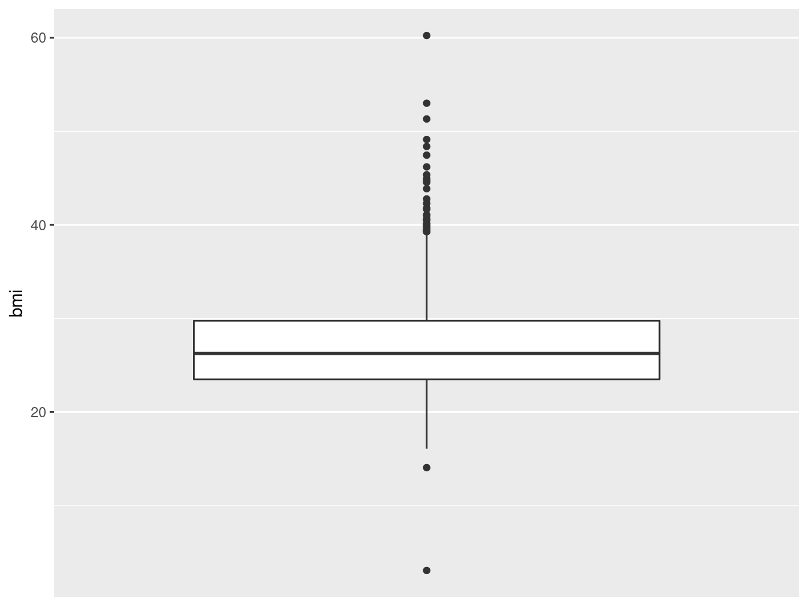
>
> ## geom_boxplot for boxplots by categorical
> dat2 %>% ggplot(aes(x = arm, y = bmi)) + geom_boxplot() + labs(x = "Treatment Arm",
+ y = "Age at Diagnosis", title = "Age with Treatment Group", subtitle = "This is a subtitle",
+ caption = "This is a caption")
Warning: Removed 19 rows containing non-finite values (stat_boxplot).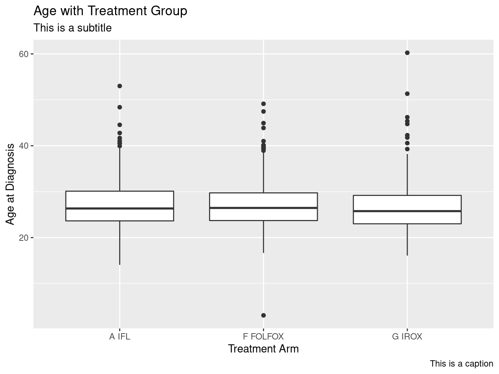
>
> # this shows a different coloring scheme (theme_bw)
> ggplot(dat2, aes(y = bmi, x = arm)) + geom_boxplot(fill = "aliceblue") + theme_bw() +
+ ggtitle("Boxplot of BMI by treatment arm") + scale_y_continuous(name = "BMI",
+ breaks = seq(0, 70, 10), limits = c(0, 70)) + scale_x_discrete(name = "Treatment Arm") +
+ theme(panel.grid.major = element_line(colour = "#e8e5e5"), panel.grid.minor = element_blank(),
+ panel.border = element_blank(), panel.background = element_blank(), plot.title = element_text(size = 14,
+ face = "bold"), axis.title = element_text(face = "bold"), axis.text.x = element_text(colour = "black",
+ size = 11), axis.text.y = element_text(colour = "black", size = 9), axis.line = element_line(size = 0.3,
+ colour = "black"))
Warning: Removed 19 rows containing non-finite values (stat_boxplot).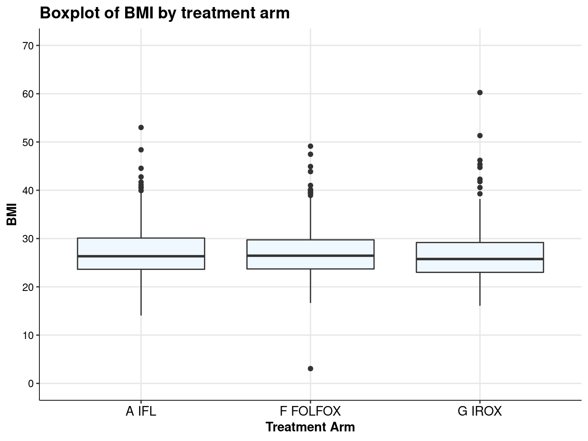
- Now make two scatterplots side-by-side, split by sex
In addition to facet_grid() and facet_wrap() there is the grid.arrange() function which allows you to plot multiple figures on one page.
> library(gridExtra)
Attaching package: 'gridExtra'
The following object is masked from 'package:dplyr':
combine
>
> plot1 <- ggplot(filter(dat2, sex == "Female"), aes(x = age, y = bmi, color = arm)) +
+ geom_point() + ggtitle("Female Scatter Plot")
> plot2 <- ggplot(filter(dat2, sex == "Male"), aes(x = age, y = bmi, color = arm)) +
+ geom_point() + ggtitle("Male Scatter Plot")
>
> grid.arrange(plot1, plot2, ncol = 2)
Warning: Removed 7 rows containing missing values (geom_point).
Warning: Removed 12 rows containing missing values (geom_point).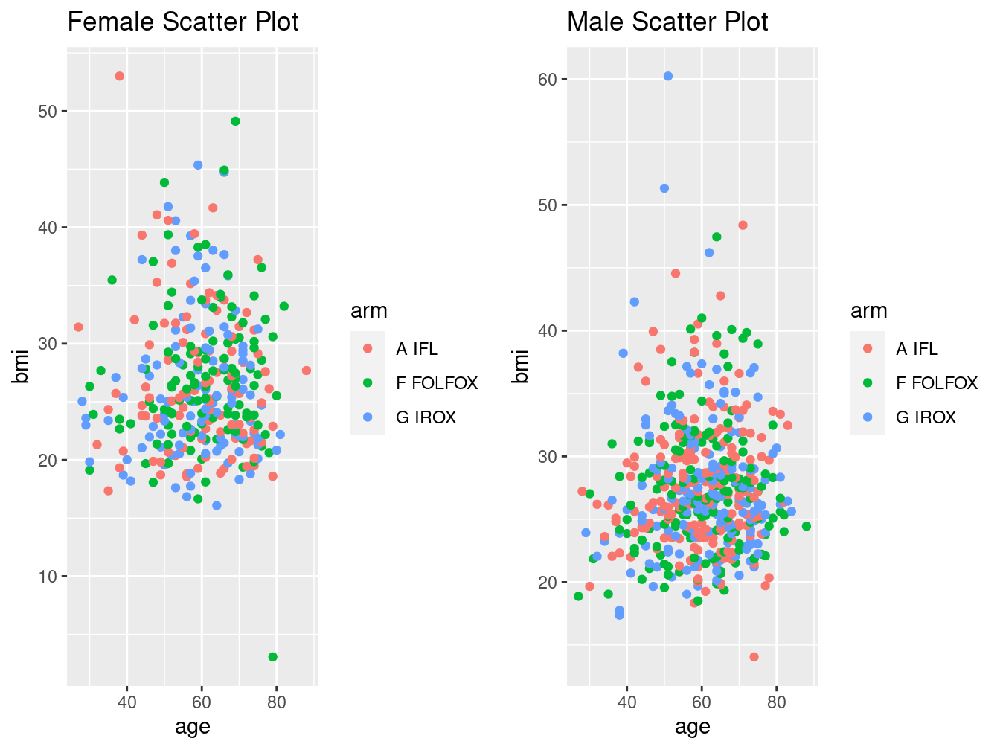
> ggplot(dat2, aes(x = age, y = bmi)) + geom_point() + theme_bw() + theme() + ggtitle("Scatterplot - Age by BMI") +
+ labs(x = vlabels$age, y = vlabels$bmi) + facet_grid(. ~ sex)
Warning: Removed 19 rows containing missing values (geom_point).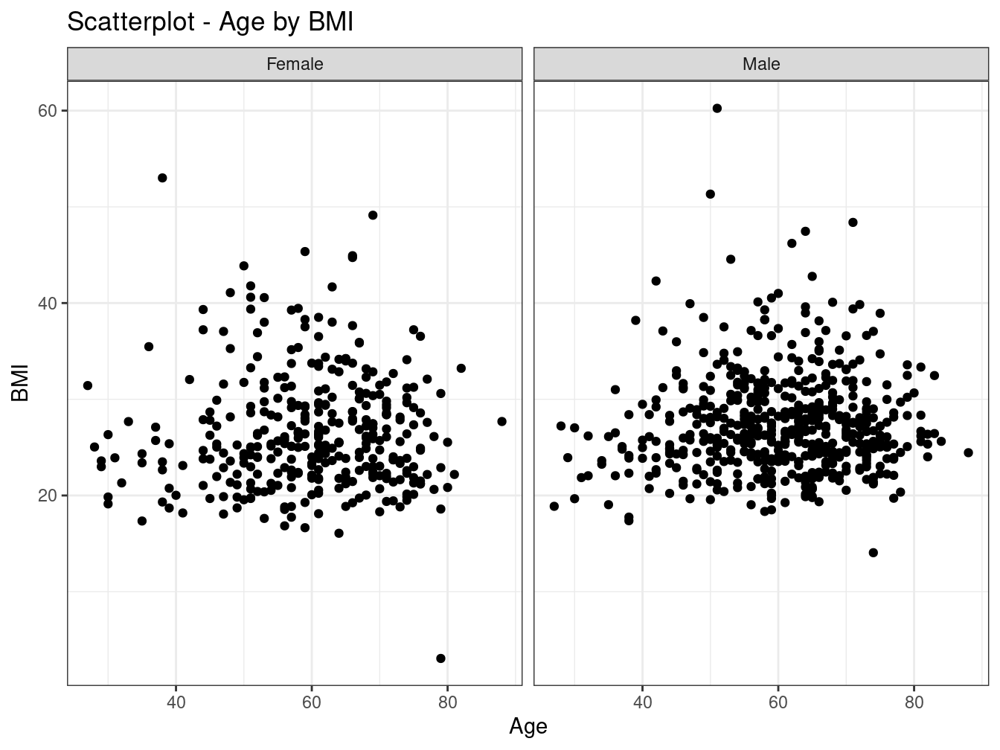
- Fancier: How would you add a regression line to these plots? How about smoothers?
There are other packages that can do some of this work, but essentially this is how you would create these plots using base R graphics.
> # code using basic R -- Regression lines
> par(mfrow = c(1, 2))
> plot(bmi ~ age, data = dat2[dat2$sex == "Female", ], col = as.numeric(as.factor(arm)),
+ main = "Females")
> abline(lm(bmi ~ age, data = dat2[dat2$sex == "Female" & dat2$arm == "A IFL", ]),
+ col = 1)
> abline(lm(bmi ~ age, data = dat2[dat2$sex == "Female" & dat2$arm == "F FOLFOX", ]),
+ col = 2)
> abline(lm(bmi ~ age, data = dat2[dat2$sex == "Female" & dat2$arm == "G IROX", ]),
+ col = 3)
>
> plot(bmi ~ age, data = dat2[dat2$sex == "Male", ], col = as.numeric(as.factor(arm)),
+ main = "Males")
> abline(lm(bmi ~ age, data = dat2[dat2$sex == "Male" & dat2$arm == "A IFL", ]), col = 1)
> abline(lm(bmi ~ age, data = dat2[dat2$sex == "Male" & dat2$arm == "F FOLFOX", ]),
+ col = 2)
> abline(lm(bmi ~ age, data = dat2[dat2$sex == "Male" & dat2$arm == "G IROX", ]), col = 3)
> legend("topright", legend = c("A IFL", "F FOLFOX", "G IROX"), col = 1:3, lty = 1,
+ bty = "n")> par(mfrow = c(1, 1))
>
> # -- Smoothers
> par(mfrow = c(1, 2))
> # females
> plot(bmi ~ age, data = dat2[dat2$sex == "Female", ], col = as.numeric(as.factor(arm)),
+ main = "Females")
> tmp <- na.omit(dat2[which(dat2$sex == "Female" & dat2$arm == "A IFL"), c("bmi", "age")])
> lines(with(tmp, smooth.spline(bmi ~ age, spar = 0.8)), col = 1, lwd = 2)
>
> tmp <- na.omit(dat2[which(dat2$sex == "Female" & dat2$arm == "F FOLFOX"), c("bmi",
+ "age")])
> lines(with(tmp, smooth.spline(bmi ~ age, spar = 0.8)), col = 2, lwd = 2)
> tmp <- na.omit(dat2[which(dat2$sex == "Female" & dat2$arm == "G IROX"), c("bmi",
+ "age")])
> lines(with(tmp, smooth.spline(bmi ~ age, spar = 0.8)), col = 3, lwd = 2)
>
> # males
> plot(bmi ~ age, data = dat2[dat2$sex == "Male", ], col = as.numeric(as.factor(arm)),
+ main = "Males")
> tmp <- na.omit(dat2[which(dat2$sex == "Male" & dat2$arm == "A IFL"), c("bmi", "age")])
> lines(with(tmp, smooth.spline(bmi ~ age, spar = 0.8)), col = 1, lwd = 2)
>
> tmp <- na.omit(dat2[which(dat2$sex == "Male" & dat2$arm == "F FOLFOX"), c("bmi",
+ "age")])
> lines(with(tmp, smooth.spline(bmi ~ age, spar = 0.8)), col = 2, lwd = 2)
> tmp <- na.omit(dat2[which(dat2$sex == "Male" & dat2$arm == "G IROX"), c("bmi", "age")])
> lines(with(tmp, smooth.spline(bmi ~ age, spar = 0.8)), col = 3, lwd = 2)
>
> # legend
> legend("topright", legend = c("A IFL", "F FOLFOX", "G IROX"), col = 1:3, lty = 1,
+ bty = "n")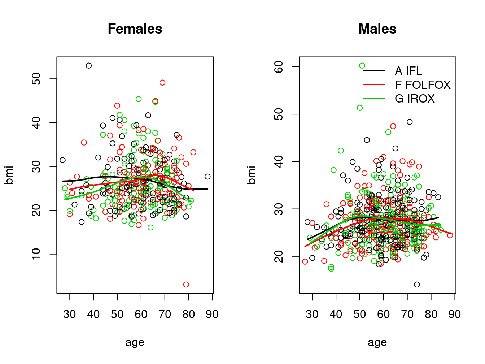
1.4.4 Basic Modeling
There is a lot of information stored in a model object and broom doesn’t work for all types of models. Sometimes you need to save the results from the summary of a fit which gives you different information than the fit itself.
> # What is stored in the lm object?
> names(fit1)
[1] "coefficients" "residuals" "effects" "rank"
[5] "fitted.values" "assign" "qr" "df.residual"
[9] "na.action" "xlevels" "call" "terms"
[13] "model"
>
> # Now create a summary.lm object and see what is stored there
> tmp <- summary(fit1)
> names(tmp)
[1] "call" "terms" "residuals" "coefficients"
[5] "aliased" "sigma" "df" "r.squared"
[9] "adj.r.squared" "fstatistic" "cov.unscaled" "na.action"
>
> # Look at the model coefficients and p-values
> tmp$coefficients
Estimate Std. Error t value Pr(>|t|)
(Intercept) 25.6960705 0.6521116 39.404408 1.354488e-195
sex12 0.8783982 0.3886608 2.260064 2.406410e-02
> class(tmp$coefficients)
[1] "matrix"1.4.5 Data Import, revisited
There are other packages that also read in Excel data including openxlsx and gdata. The package xlsx causes problems within RStudio and so users are strongly encouraged to no longer use that particular package. Note that openxlsx will only open newer .xlsx files. All three functions have slightly different options so if you need to do something fancy with Excel, it is worth looking more closely at the help pages.
> # gdata
> v1 <- gdata::read.xls(xls = "data/dat1.xls", sheet = 1)
>
> # readxl
> v2 <- readxl::read_excel(path = "data/dat1.xls", sheet = 1)
>
> # openxlsx, cannot real .xls - only .xlsx v3 <-
> # openxlsx::read.xlsx(xlsxFile='data/dat1.xls', sheet=1)One of the differences between reading in SAS and Excel is that Excel doesn’t have the concept of variable labels.